60
40
0%
Target: 80%100
100
00:24:07
Loading duration data...
| No | Title | Question | Expected | Actual | Explanation | Image SS | Skor | Status | Duration |
|---|---|---|---|---|---|---|---|---|---|
| 1 | Apakah SPKLU bisa digunakan untuk mobil yang baterainya hampir kosong | Apakah SPKLU bisa digunakan untuk mobil yang baterainya hampir kosong | Bisa, selama kendaraan masih dapat dinyalakan dan sistem kendaraan berfungsi normal. | Bisa, selama kendaraan masih dapat dinyalakan dan sistem kendaraan berfungsi normal.Ada lagi yang bisa Erva bantu? | Auto: ✓ Jawaban sangat baik dan lengkap (similarity: 93.7%). Semua informasi penting tercakup dengan akurat. |
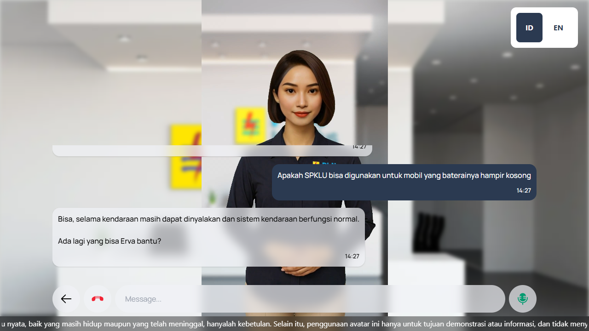 |
0.937 | PASS | 00:00:11 |
| 2 | Apakah aman menggunakan SPKLU saat malam hari | Apakah aman menggunakan SPKLU saat malam hari | Aman, SPKLU dirancang untuk digunakan kapan saja termasuk malam hari. | Aman, SPKLU dirancang untuk digunakan kapan saja termasuk malam hari.Ada lagi yang bisa Erva bantu? | Auto: ✓ Jawaban sangat baik dan lengkap (similarity: 92.4%). Semua informasi penting tercakup dengan akurat. | 0.924 | PASS | 00:00:11 | |
| 3 | Kenapa charger terlihat berhenti sebentar lalu lanjut lagi | Kenapa charger terlihat berhenti sebentar lalu lanjut lagi | Sistem bisa melakukan penyesuaian otomatis sebelum melanjutkan pengisian. | Sistem bisa melakukan penyesuaian otomatis sebelum melanjutkan pengisian.Ada lagi yang bisa Erva bantu? | Auto: ✓ Jawaban sangat baik dan lengkap (similarity: 92.9%). Semua informasi penting tercakup dengan akurat. | 0.929 | PASS | 00:00:11 | |
| 4 | Apakah saya boleh membatalkan charging di tengah jalan | Apakah saya boleh membatalkan charging di tengah jalan | Boleh. Charging dapat dihentikan kapan saja melalui aplikasi sesuai kebutuhan. | Boleh. Charging dapat dihentikan kapan saja melalui aplikasi sesuai kebutuhan.Ada lagi yang bisa Erva bantu? | Auto: ✓ Jawaban sangat baik dan lengkap (similarity: 93.3%). Semua informasi penting tercakup dengan akurat. |
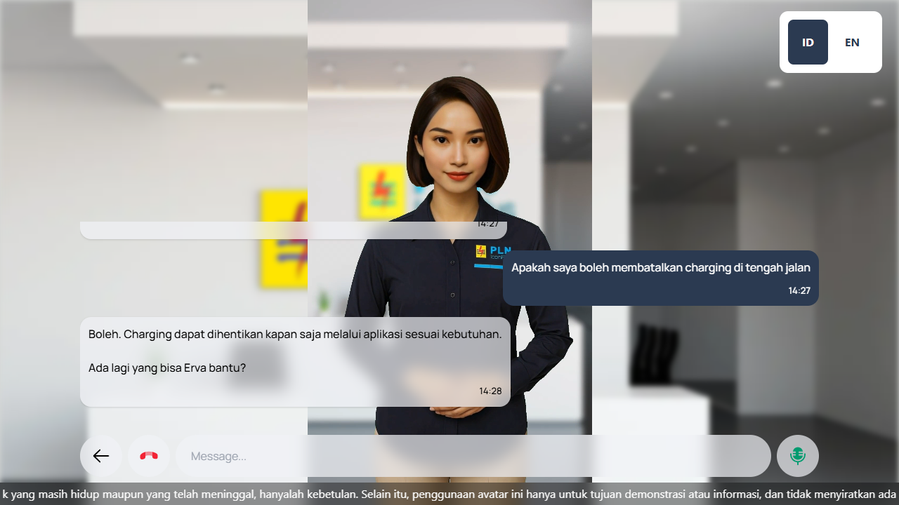 |
0.933 | PASS | 00:00:11 |
| 5 | Apakah charging yang sering terputus berbahaya | Apakah charging yang sering terputus berbahaya | Tidak berbahaya, selama proses dilakukan sesuai prosedur dan sistem kendaraan bekerja normal. | Tidak berbahaya, selama proses dilakukan sesuai prosedur dan sistem kendaraan bekerja normal.Ada lagi yang bisa Erva bantu? | Auto: ✓ Jawaban sangat baik dan lengkap (similarity: 94.1%). Semua informasi penting tercakup dengan akurat. |
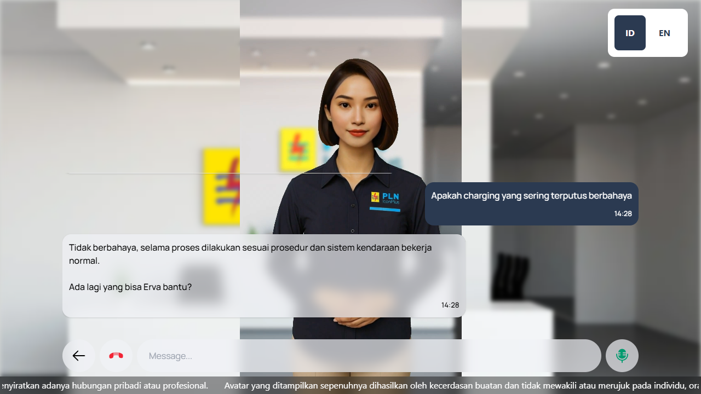 |
0.941 | PASS | 00:00:11 |
| 6 | Kenapa notifikasi aplikasi terlambat muncul | Kenapa notifikasi aplikasi terlambat muncul | Notifikasi bisa tertunda karena koneksi internet atau proses sinkronisasi sistem. | Notifikasi bisa tertunda karena koneksi internet atau proses sinkronisasi sistem.Ada lagi yang bisa Erva bantu? | Auto: ✓ Jawaban sangat baik dan lengkap (similarity: 93.3%). Semua informasi penting tercakup dengan akurat. | 0.933 | PASS | 00:00:11 | |
| 7 | Apakah saya bisa mengandalkan estimasi waktu charging | Apakah saya bisa mengandalkan estimasi waktu charging | Estimasi hanya bersifat perkiraan. Waktu aktual dapat berubah tergantung kondisi kendaraan dan sistem. | Estimasi waktu charging hanya bersifat perkiraan. Waktu aktual dapat berubah tergantung kondisi kendaraan dan sistem.Ada lagi yang bisa Erva bantu? | Auto: ✓ Jawaban sangat baik dan lengkap (similarity: 91.4%). Semua informasi penting tercakup dengan akurat. | 0.914 | PASS | 00:00:11 | |
| 8 | Kenapa indikator di mobil dan di charger tidak sama | Kenapa indikator di mobil dan di charger tidak sama | Perbedaan tampilan bisa terjadi karena waktu pembaruan data yang tidak bersamaan. | Perbedaan tampilan antara indikator di mobil dan di charger bisa terjadi karena waktu pembaruan data yang tidak bersamaan.Ada lagi yang bisa Erva bantu? | Auto: ✓ Jawaban baik (similarity: 84.5%). Mencakup poin-poin utama dengan tepat. | 0.845 | PASS | 00:00:11 | |
| 9 | Apakah charging bisa dihentikan otomatis oleh sistem | Apakah charging bisa dihentikan otomatis oleh sistem | Ya, sistem dapat menghentikan charging jika mendeteksi kondisi tertentu untuk keamanan. | Ya, sistem dapat menghentikan charging jika mendeteksi kondisi tertentu untuk keamanan.Ada lagi yang bisa Erva bantu? | Auto: ✓ Jawaban sangat baik dan lengkap (similarity: 93.7%). Semua informasi penting tercakup dengan akurat. | 0.937 | PASS | 00:00:11 | |
| 10 | Apakah SPKLU bisa digunakan jika mobil saya masih menyala | Apakah SPKLU bisa digunakan jika mobil saya masih menyala | Umumnya mobil perlu dalam kondisi parkir dan siap charging. Ikuti petunjuk di kendaraan dan aplikasi. | Umumnya, mobil perlu dalam kondisi parkir dan siap charging. Pastikan untuk mengikuti petunjuk di kendaraan dan aplikasi sebelum memulai pengisian daya.Ada lagi yang bisa Erva bantu? | Auto: ✓ Jawaban baik (similarity: 83.7%). Mencakup poin-poin utama dengan tepat. | 0.837 | PASS | 00:00:11 | |
| 11 | Kenapa mobil saya meminta konfirmasi tambahan sebelum charging | Kenapa mobil saya meminta konfirmasi tambahan sebelum charging | Beberapa kendaraan memerlukan konfirmasi untuk keamanan sebelum pengisian dimulai. | Beberapa kendaraan memerlukan konfirmasi untuk keamanan sebelum pengisian dimulai.Ada lagi yang bisa Erva bantu? | Auto: ✓ Jawaban sangat baik dan lengkap (similarity: 93.3%). Semua informasi penting tercakup dengan akurat. |
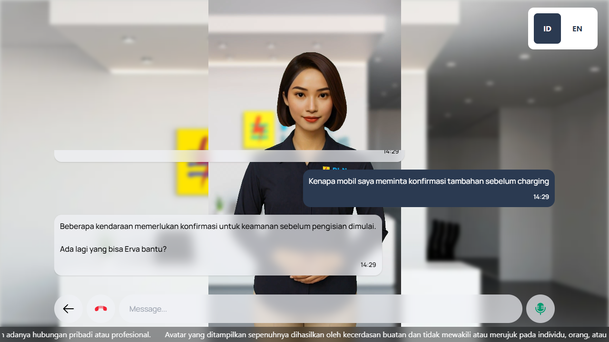 |
0.933 | PASS | 00:00:11 |
| 12 | Apakah saya boleh membersihkan mobil saat charging | Apakah saya boleh membersihkan mobil saat charging | Boleh, selama tidak menyentuh konektor dan tidak mengganggu sistem charging. | Boleh, selama tidak menyentuh konektor dan tidak mengganggu sistem charging.Ada lagi yang bisa Erva bantu? | Auto: ✓ Jawaban sangat baik dan lengkap (similarity: 92.9%). Semua informasi penting tercakup dengan akurat. |
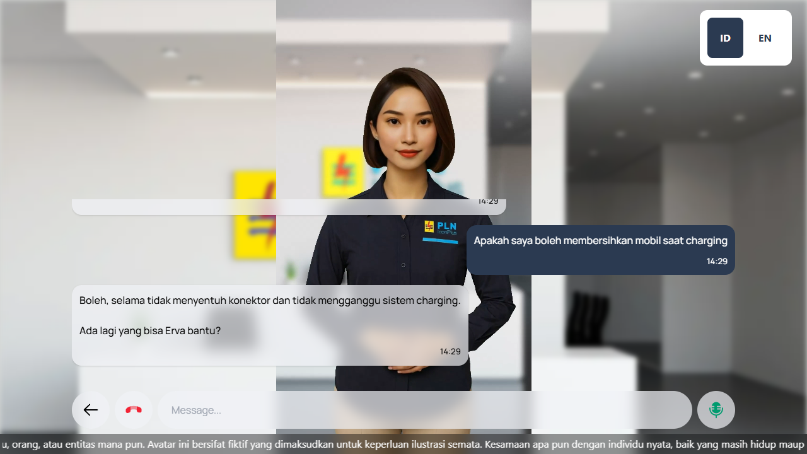 |
0.929 | PASS | 00:00:11 |
| 13 | Kenapa charger mengeluarkan suara saat digunakan | Kenapa charger mengeluarkan suara saat digunakan | Suara dari charger adalah bagian dari sistem pendinginan dan merupakan kondisi normal. | Suara dari charger adalah bagian dari sistem pendinginan dan merupakan kondisi normal.Ada lagi yang bisa Erva bantu? | Auto: ✓ Jawaban sangat baik dan lengkap (similarity: 93.7%). Semua informasi penting tercakup dengan akurat. |
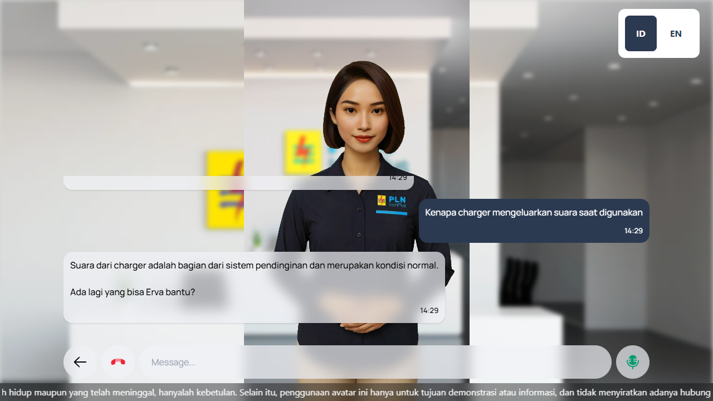 |
0.937 | PASS | 00:00:11 |
| 14 | Apakah aman menggunakan SPKLU jika mobil baru pertama kali diisi | Apakah aman menggunakan SPKLU jika mobil baru pertama kali diisi | Aman. SPKLU dapat digunakan untuk mobil baru selama mengikuti prosedur yang benar. | Aman. SPKLU dapat digunakan untuk mobil baru selama mengikuti prosedur yang benar.Ada lagi yang bisa Erva bantu? | Auto: ✓ Jawaban sangat baik dan lengkap (similarity: 93.3%). Semua informasi penting tercakup dengan akurat. | 0.933 | PASS | 00:00:11 | |
| 15 | Apakah saya perlu memantau charging terus menerus | Apakah saya perlu memantau charging terus menerus | Tidak perlu, namun disarankan untuk mengecek status secara berkala melalui aplikasi. | Tidak perlu, namun disarankan untuk mengecek status secara berkala melalui aplikasi.Ada lagi yang bisa Erva bantu? | Auto: ✓ Jawaban sangat baik dan lengkap (similarity: 93.7%). Semua informasi penting tercakup dengan akurat. |
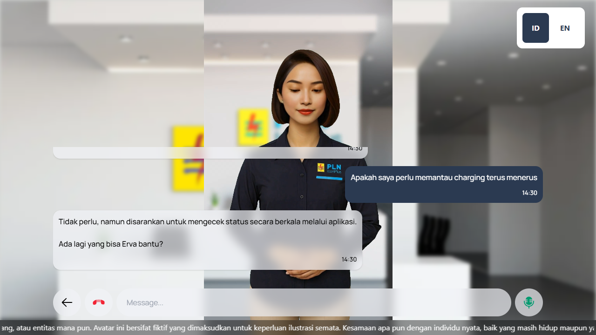 |
0.937 | PASS | 00:00:11 |
| 16 | Kenapa mobil saya terasa panas setelah charging | Kenapa mobil saya terasa panas setelah charging | Suhu kendaraan dapat meningkat sementara setelah charging dan biasanya akan kembali normal. | Suhu kendaraan dapat meningkat sementara setelah charging dan biasanya akan kembali normal.Ada lagi yang bisa Erva bantu? | Auto: ✓ Jawaban sangat baik dan lengkap (similarity: 94.1%). Semua informasi penting tercakup dengan akurat. |
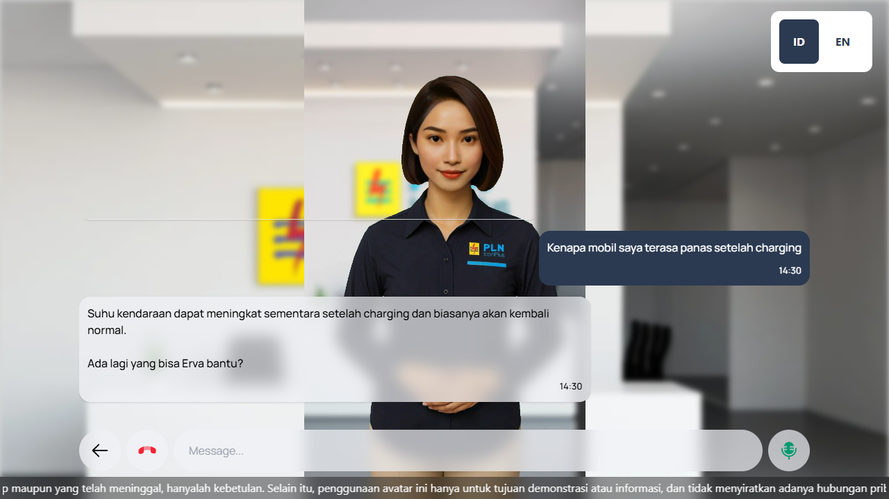 |
0.941 | PASS | 00:00:11 |
| 17 | Jika saya masih ragu setelah membaca panduan ini, apa yang harus saya lakukan | Jika saya masih ragu setelah membaca panduan ini, apa yang harus saya lakukan | Jika masih ragu atau membutuhkan bantuan lebih lanjut, silakan hubungi PLN Mobile atau call center 123. | Jika masih ragu atau membutuhkan bantuan lebih lanjut, silakan hubungi PLN Mobile atau call center 123.Ada lagi yang bisa Erva bantu? | Auto: ✓ Jawaban sangat baik dan lengkap (similarity: 94.5%). Semua informasi penting tercakup dengan akurat. |
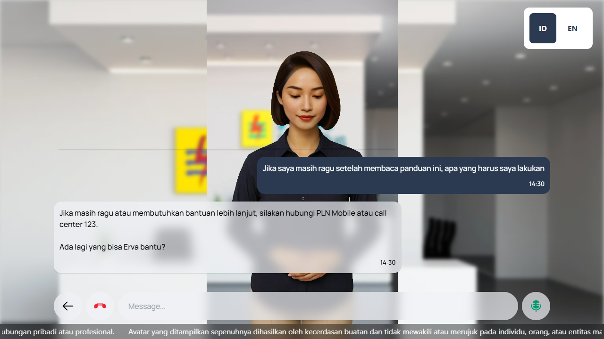 |
0.945 | PASS | 00:00:11 |
| 18 | Jelaskan spesifikasi BYD Atto 3 | Jelaskan spesifikasi BYD Atto 3 | BYD Atto 3 tersedia dalam 2 varian, yaitu Standard Range 49.92 kWh dan Extended Range 60.48 kWh. Mobil ini mendukung AC Type 2 dan DC Fast Charging CCS2, sehingga bisa digunakan di SPKLU dengan nozzle AC Type 2 maupun DC CCS2, termasuk SPKLU Gading Serpong. | BYD Atto 3 tersedia dalam dua varian, yaitu Standard Range dengan kapasitas baterai 49.92 kWh dan Extended Range dengan kapasitas baterai 60.48 kWh. Mobil ini mendukung pengisian daya menggunakan AC Type 2 dan DC Fast Charging CCS2, sehingga dapat digunakan di SPKLU dengan nozzle AC Type 2 maupun DC CCS2, termasuk di SPKLU Gading Serpong.Ada lagi yang bisa Erva bantu? | Auto: ✓ Jawaban baik (similarity: 87.7%). Mencakup poin-poin utama dengan tepat. |
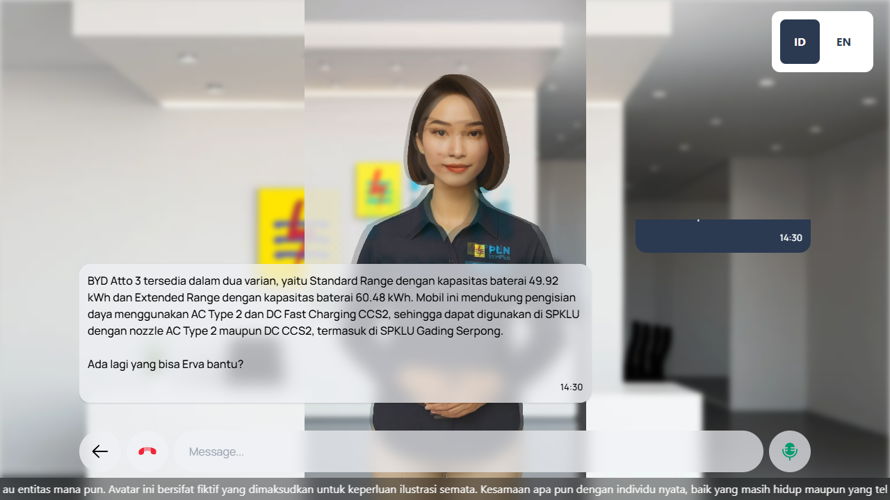 |
0.877 | PASS | 00:00:11 |
| 19 | Jelaskan spesifikasi BYD Dolphin | Jelaskan spesifikasi BYD Dolphin | BYD Dolphin memiliki varian baterai 44.9 kWh dan 60.48 kWh. Tipe charger-nya AC Type 2 dan DC CCS2, sehingga dapat mengisi daya di SPKLU AC maupun DC. | BYD Dolphin memiliki varian baterai dengan kapasitas 44.9 kWh dan 60.48 kWh. Tipe charger yang digunakan adalah AC Type 2 dan DC CCS2, sehingga memungkinkan pengisian daya di SPKLU AC maupun DC.Ada lagi yang bisa Erva bantu? | Auto: ✓ Jawaban baik (similarity: 79.8%). Mencakup sebagian besar informasi. Akan lebih sempurna dengan dapat dan mengisi. | 0.798 | PASS | 00:00:11 | |
| 20 | Jelaskan spesifikasi BYD Seal | Jelaskan spesifikasi BYD Seal | BYD Seal tersedia dalam beberapa varian dengan baterai 61.44 kWh dan 82.56 kWh. Mobil ini mendukung AC Type 2 dan DC CCS2, dan cocok untuk charging cepat di SPKLU DC. | BYD Seal tersedia dalam beberapa varian dengan kapasitas baterai 61.44 kWh dan 82.56 kWh. Mobil ini mendukung pengisian daya menggunakan AC Type 2 dan DC CCS2, sehingga cocok untuk pengisian cepat di SPKLU DC.Ada lagi yang bisa Erva bantu? | Auto: ✓ Jawaban baik (similarity: 83.7%). Mencakup sebagian besar informasi. Akan lebih sempurna dengan charging. | 0.837 | PASS | 00:00:11 | |
| 21 | Jelaskan spesifikasi BYD Sealion 7 | Jelaskan spesifikasi BYD Sealion 7 | BYD Sealion 7 memiliki kapasitas baterai sekitar ±82 kWh tergantung pasar. Mobil ini mendukung AC Type 2 dan DC CCS2, sehingga bisa digunakan di SPKLU AC maupun DC. | BYD Sealion 7 dilengkapi dengan kapasitas baterai sekitar 82 kWh, meskipun kapasitas ini dapat bervariasi tergantung pada pasar. Mobil ini mendukung pengisian daya menggunakan AC Type 2 dan DC CCS2, sehingga bisa digunakan di SPKLU AC maupun DC.Ada lagi yang bisa Erva bantu? | Auto: ✓ Jawaban baik (similarity: 81.2%). Mencakup sebagian besar informasi. Akan lebih sempurna dengan memiliki. | 0.812 | PASS | 00:00:11 | |
| 22 | Jelaskan spesifikasi BYD M6 | Jelaskan spesifikasi BYD M6 | BYD M6 menggunakan baterai sekitar 71 kWh dan mendukung AC Type 2 serta DC CCS2, sehingga kompatibel dengan SPKLU. | BYD M6 menggunakan baterai dengan kapasitas sekitar 71 kWh. Mobil ini mendukung pengisian daya dengan tipe charger AC Type 2 dan DC CCS2, sehingga kompatibel dengan SPKLU.Ada lagi yang bisa Erva bantu? | Auto: ✓ Jawaban baik (similarity: 77.2%). Mencakup sebagian besar informasi. Akan lebih sempurna dengan serta. | 0.772 | PASS | 00:00:11 | |
| 23 | Jelaskan spesifikasi Denza D9 EV | Jelaskan spesifikasi Denza D9 EV | Denza D9 EV memiliki baterai besar sekitar 103 kWh dan mendukung AC Type 2 serta DC CCS2, cocok untuk pengisian daya di SPKLU AC maupun DC. | Denza D9 EV memiliki baterai besar dengan kapasitas sekitar 103 kWh. Mobil ini mendukung pengisian daya menggunakan AC Type 2 dan DC CCS2, sehingga cocok untuk pengisian daya di SPKLU AC maupun DC.Ada lagi yang bisa Erva bantu? | Auto: ✓ Jawaban baik (similarity: 80.7%). Mencakup sebagian besar informasi. Akan lebih sempurna dengan serta. | 0.807 | PASS | 00:00:11 | |
| 24 | Jelaskan spesifikasi Wuling Air EV | Jelaskan spesifikasi Wuling Air EV | Wuling Air EV tersedia varian 17.3 kWh dan 26.7 kWh. Mobil ini hanya mendukung AC Type 2 dan tidak mendukung DC fast charging, sehingga gunakan SPKLU AC Type 2. | Wuling Air EV tersedia dalam dua varian baterai, yaitu 17.3 kWh dan 26.7 kWh. Mobil ini hanya mendukung pengisian daya menggunakan AC Type 2 dan tidak mendukung DC fast charging, sehingga disarankan untuk menggunakan SPKLU AC Type 2.Ada lagi yang bisa Erva bantu? | Auto: ✓ Jawaban baik (similarity: 83.9%). Mencakup poin-poin utama dengan tepat. |
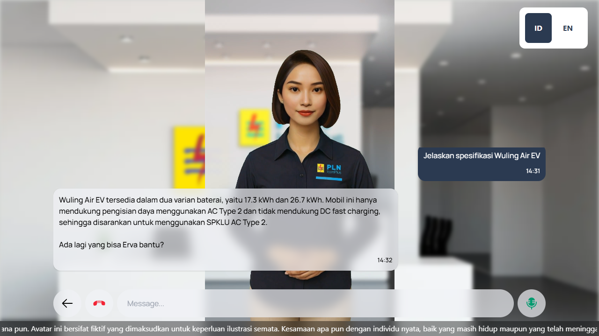 |
0.839 | PASS | 00:00:11 |
| 25 | Jelaskan spesifikasi Wuling Binguo EV | Jelaskan spesifikasi Wuling Binguo EV | Wuling Binguo EV tersedia baterai 31.9 kWh dan 37.9 kWh. Mobil ini mendukung AC Type 2 dan DC CCS2, sehingga bisa mengisi daya di SPKLU AC maupun DC. | Error: Tidak ada balasan dari bot. | ✗ Tidak ada respons dari bot. Tidak dapat dievaluasi. |
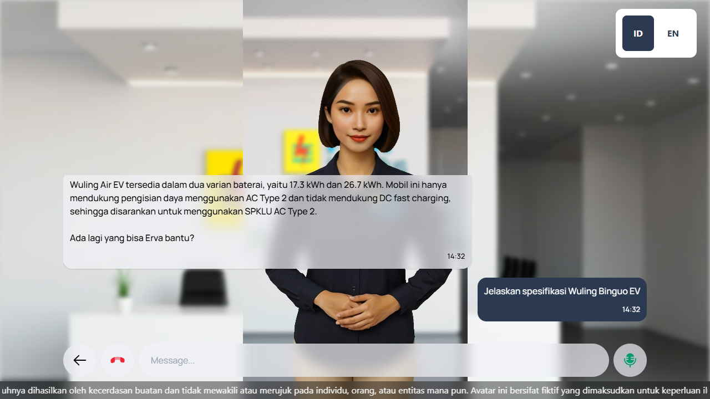 |
0 | FAILED | 00:00:26 |
| 26 | Jelaskan spesifikasi Wuling Cloud EV | Jelaskan spesifikasi Wuling Cloud EV | Wuling Cloud EV menggunakan baterai 50.6 kWh dan mendukung AC Type 2 serta DC CCS2, sehingga kompatibel dengan SPKLU. | Error: Tidak ada balasan dari bot. | ✗ Tidak ada respons dari bot. Tidak dapat dievaluasi. |
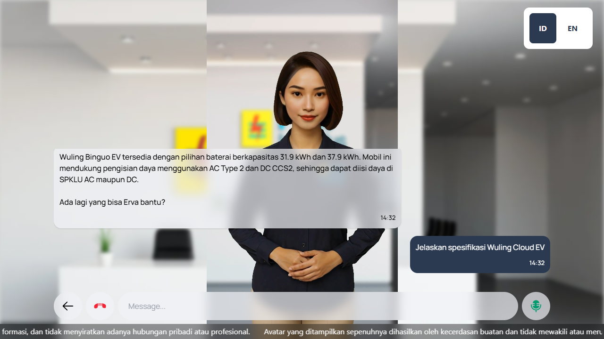 |
0 | FAILED | 00:00:26 |
| 27 | Jelaskan spesifikasi Hyundai IONIQ 5 | Jelaskan spesifikasi Hyundai IONIQ 5 | IONIQ 5 tersedia varian 58.0 kWh dan 72.6 kWh. Mobil ini mendukung AC Type 2 dan DC CCS2, cocok untuk charging cepat di SPKLU DC. | Wuling Cloud EV dilengkapi dengan baterai berkapasitas 50.6 kWh. Mobil ini mendukung pengisian daya menggunakan AC Type 2 dan DC CCS2, sehingga kompatibel dengan SPKLU untuk pengisian daya.Ada lagi yang bisa Erva bantu? Hyundai IONIQ 5 tersedia dalam dua varian baterai, yaitu 58.0 kWh dan 72.6 kWh. Mobil ini mendukung pengisian daya menggunakan AC Type 2 dan DC CCS2, yang cocok untuk pengisian cepat di SPKLU DC.Ada lagi yang bisa Erva bantu? | Auto: ⚠ Jawaban cukup (similarity: 67.1%). Benar untuk ioniq dan tersedia, tapi kurang lengkap. Perlu charging. | 0.671 | FAILED | 00:00:11 | |
| 28 | Jelaskan spesifikasi Hyundai IONIQ 6 | Jelaskan spesifikasi Hyundai IONIQ 6 | IONIQ 6 menggunakan baterai 77.4 kWh dan mendukung AC Type 2 serta DC CCS2, sehingga bisa digunakan di SPKLU AC maupun DC. | Hyundai IONIQ 6 menggunakan baterai berkapasitas 77.4 kWh dan mendukung pengisian daya dengan AC Type 2 serta DC CCS2. Dengan demikian, mobil ini dapat diisi daya di SPKLU AC maupun DC.Ada lagi yang bisa Erva bantu? | Auto: ✓ Jawaban baik (similarity: 77.3%). Mencakup sebagian besar informasi. Akan lebih sempurna dengan sehingga. | 0.773 | PASS | 00:00:11 | |
| 29 | Jelaskan spesifikasi Kona Electric terbaru | Jelaskan spesifikasi Kona Electric terbaru | Kona Electric tersedia baterai 48.9 kWh dan 66.0 kWh. Mobil ini mendukung AC Type 2 dan DC CCS2, kompatibel dengan SPKLU. | Kona Electric terbaru tersedia dengan pilihan baterai berkapasitas 48.9 kWh dan 66.0 kWh. Mobil ini mendukung pengisian daya menggunakan AC Type 2 dan DC CCS2, sehingga kompatibel dengan SPKLU untuk pengisian daya.Ada lagi yang bisa Erva bantu? | Auto: ✓ Jawaban baik (similarity: 80.1%). Mencakup poin-poin utama dengan tepat. |
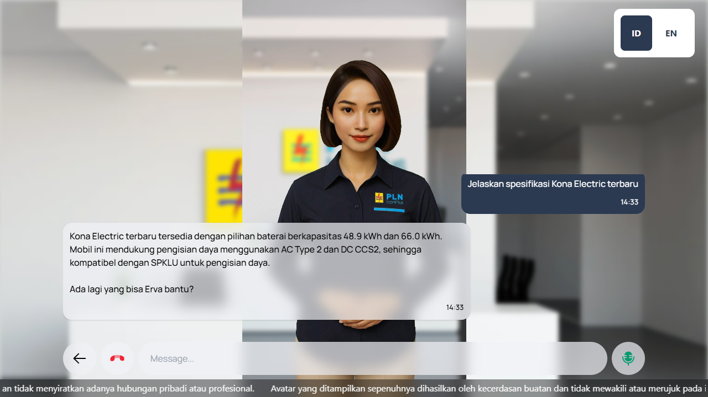 |
0.801 | PASS | 00:00:11 |
| 30 | Jelaskan spesifikasi Omoda E5 | Jelaskan spesifikasi Omoda E5 | Omoda E5 menggunakan baterai 61.0 kWh dan mendukung AC Type 2 serta DC CCS2, sehingga dapat mengisi daya di SPKLU. | Omoda E5 dilengkapi dengan baterai berkapasitas 61.0 kWh dan mendukung pengisian daya menggunakan AC Type 2 serta DC CCS2. Dengan spesifikasi ini, Omoda E5 dapat diisi daya di SPKLU.Ada lagi yang bisa Erva bantu? | Auto: ✓ Jawaban baik (similarity: 71.2%). Mencakup sebagian besar informasi. Akan lebih sempurna dengan sehingga dan mengisi. |
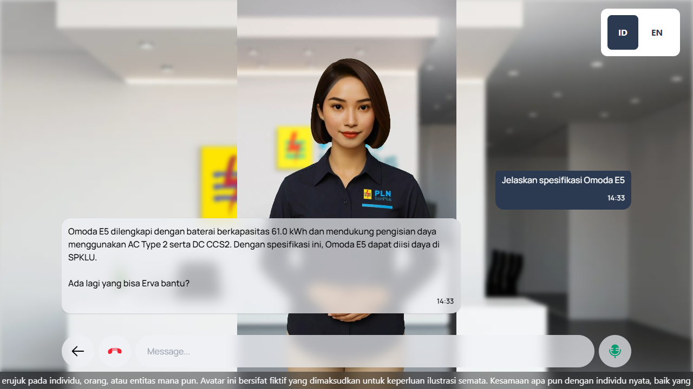 |
0.712 | PASS | 00:00:11 |
| 31 | Jelaskan spesifikasi Chery J6 / iCar 03 | Jelaskan spesifikasi Chery J6 / iCar 03 | Chery J6 tersedia varian RWD 65.7 kWh dan AWD 69.8 kWh. Mobil ini mendukung AC Type 2 dan DC CCS2, cocok untuk SPKLU. | Chery J6 atau iCar 03 tersedia dalam dua varian, yaitu RWD dengan baterai 65.7 kWh dan AWD dengan baterai 69.8 kWh. Mobil ini mendukung pengisian daya menggunakan AC Type 2 dan DC CCS2, sehingga cocok untuk digunakan di SPKLU.Ada lagi yang bisa Erva bantu? | Auto: ✓ Jawaban baik (similarity: 77.2%). Mencakup poin-poin utama dengan tepat. | 0.772 | PASS | 00:00:11 | |
| 32 | Jelaskan spesifikasi Aion Y Plus | Jelaskan spesifikasi Aion Y Plus | Aion Y Plus tersedia baterai 50.7 kWh dan 63.2 kWh. Mobil ini mendukung AC Type 2 dan DC CCS2, sehingga bisa digunakan di SPKLU. | Aion Y Plus hadir dengan pilihan baterai berkapasitas 50.7 kWh dan 63.2 kWh. Mobil ini mendukung pengisian daya menggunakan AC Type 2 dan DC CCS2, sehingga dapat digunakan di SPKLU untuk pengisian daya.Ada lagi yang bisa Erva bantu? | Auto: ✓ Jawaban baik (similarity: 81.4%). Mencakup poin-poin utama dengan tepat. | 0.814 | PASS | 00:00:11 | |
| 33 | Jelaskan spesifikasi Aion Hyptec HT | Jelaskan spesifikasi Aion Hyptec HT | Aion Hyptec HT memiliki baterai sekitar 83 kWh dan mendukung AC Type 2 serta DC CCS2. | Aion Hyptec HT dilengkapi dengan baterai berkapasitas sekitar 83 kWh. Mobil ini mendukung pengisian daya menggunakan AC Type 2 dan DC CCS2, sehingga dapat diisi daya di SPKLU.Ada lagi yang bisa Erva bantu? | Auto: ⚠ Jawaban cukup (similarity: 63.8%). Benar untuk aion dan hyptec, tapi kurang lengkap. Perlu memiliki, serta. |
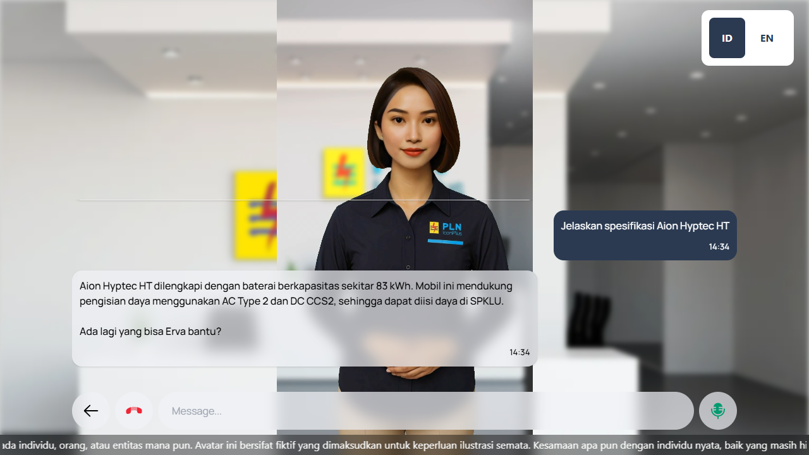 |
0.638 | FAILED | 00:00:11 |
| 34 | Jelaskan spesifikasi Aion V | Jelaskan spesifikasi Aion V | Aion V menggunakan baterai sekitar 70 kWh tergantung varian dan mendukung AC Type 2 serta DC CCS2. | Aion V menggunakan baterai dengan kapasitas sekitar 70 kWh, tergantung pada varian yang dipilih. Mobil ini mendukung pengisian daya menggunakan AC Type 2 dan DC CCS2, sehingga dapat digunakan di SPKLU untuk pengisian daya.Ada lagi yang bisa Erva bantu? | Auto: ✓ Jawaban baik (similarity: 70.7%). Mencakup sebagian besar informasi. Akan lebih sempurna dengan serta. | 0.707 | PASS | 00:00:11 | |
| 35 | Jelaskan spesifikasi Neta V-II | Jelaskan spesifikasi Neta V-II | Neta V-II menggunakan baterai 36.1 kWh dan hanya mendukung AC Type 2, sehingga gunakan SPKLU AC. | Neta V-II menggunakan baterai berkapasitas 36.1 kWh dan mendukung pengisian daya dengan AC Type 2. Oleh karena itu, mobil ini sebaiknya diisi daya menggunakan SPKLU AC.Ada lagi yang bisa Erva bantu? | Auto: ⚠ Jawaban cukup (similarity: 68.3%). Benar untuk neta dan menggunakan, tapi kurang lengkap. Perlu hanya, sehingga. | 0.683 | FAILED | 00:00:11 | |
| 36 | Jelaskan spesifikasi Seres E1 | Jelaskan spesifikasi Seres E1 | Seres E1 tersedia baterai 13.8 kWh dan 16.8 kWh. Mobil ini hanya mendukung AC Type 2 dan cocok untuk SPKLU AC. | Seres E1 tersedia dengan pilihan baterai berkapasitas 13.8 kWh dan 16.8 kWh. Mobil ini mendukung pengisian daya menggunakan AC Type 2 dan cocok untuk diisi daya di SPKLU AC.Ada lagi yang bisa Erva bantu? | Auto: ✓ Jawaban baik (similarity: 76.9%). Mencakup sebagian besar informasi. Akan lebih sempurna dengan hanya. |
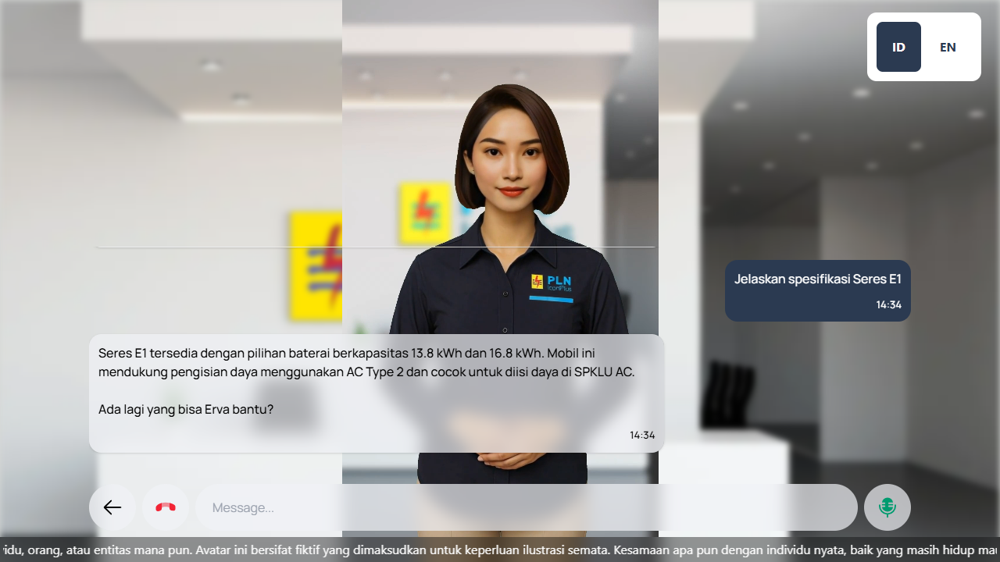 |
0.769 | PASS | 00:00:11 |
| 37 | Jelaskan spesifikasi Tesla Model 3 | Jelaskan spesifikasi Tesla Model 3 | Tesla Model 3 tersedia dengan kapasitas baterai sekitar 57.5 kWh dan 75 kWh. Mobil ini mendukung AC Type 2 dan DC CCS2. | Tesla Model 3 tersedia dengan pilihan kapasitas baterai sekitar 57.5 kWh dan 75 kWh. Mobil ini mendukung pengisian daya menggunakan AC Type 2 dan DC CCS2, sehingga dapat diisi daya di SPKLU yang mendukung kedua jenis konektor tersebut.Ada lagi yang bisa Erva bantu? | Auto: ✓ Jawaban baik (similarity: 81.7%). Mencakup poin-poin utama dengan tepat. | 0.817 | PASS | 00:00:11 | |
| 38 | Jelaskan spesifikasi Tesla Model Y | Jelaskan spesifikasi Tesla Model Y | Tesla Model Y tersedia dengan baterai sekitar 57.5 kWh dan 75 kWh serta mendukung AC Type 2 dan DC CCS2. | Tesla Model Y tersedia dengan pilihan baterai berkapasitas sekitar 57.5 kWh dan 75 kWh. Mobil ini mendukung pengisian daya menggunakan AC Type 2 dan DC CCS2, sehingga dapat diisi daya di SPKLU AC maupun DC.Ada lagi yang bisa Erva bantu? | Auto: ✓ Jawaban baik (similarity: 73.4%). Mencakup sebagian besar informasi. Akan lebih sempurna dengan serta. | 0.734 | PASS | 00:00:11 | |
| 39 | Jelaskan spesifikasi BMW i4 | Jelaskan spesifikasi BMW i4 | BMW i4 menggunakan baterai 83.9 kWh dan mendukung AC Type 2 serta DC CCS2, cocok untuk SPKLU. | BMW i4 dilengkapi dengan baterai berkapasitas 83.9 kWh dan mendukung pengisian daya menggunakan AC Type 2 serta DC CCS2. Ini membuatnya cocok untuk diisi daya di SPKLU yang mendukung kedua jenis konektor tersebut.Ada lagi yang bisa Erva bantu? | Auto: ✓ Jawaban baik (similarity: 73.4%). Mencakup poin-poin utama dengan tepat. |
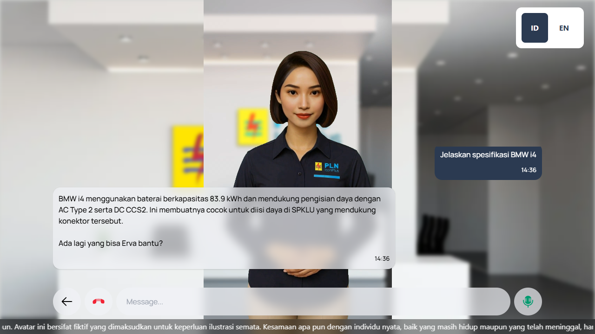 |
0.734 | PASS | 00:00:11 |
| 40 | Jelaskan spesifikasi BMW iX | Jelaskan spesifikasi BMW iX | BMW iX tersedia baterai 76.6 kWh dan 111.5 kWh, mendukung AC Type 2 dan DC CCS2. | BMW iX tersedia dengan pilihan baterai berkapasitas 76.6 kWh dan 111.5 kWh. Mobil ini mendukung pengisian daya menggunakan AC Type 2 dan DC CCS2, sehingga dapat diisi daya di SPKLU yang mendukung kedua jenis konektor tersebut.Ada lagi yang bisa Erva bantu? | Auto: ✓ Jawaban baik (similarity: 71.4%). Mencakup poin-poin utama dengan tepat. | 0.714 | PASS | 00:00:11 | |
| 41 | Jelaskan spesifikasi BMW i7 | Jelaskan spesifikasi BMW i7 | BMW i7 menggunakan baterai 101.7 kWh dan mendukung AC Type 2 dan DC CCS2. | BMW i7 menggunakan baterai berkapasitas 101.7 kWh dan mendukung pengisian daya dengan AC Type 2 serta DC CCS2. Ini memungkinkan pengisian daya yang fleksibel di berbagai SPKLU yang mendukung konektor tersebut.Ada lagi yang bisa Erva bantu? | Auto: ✓ Jawaban baik (similarity: 72.8%). Mencakup poin-poin utama dengan tepat. |
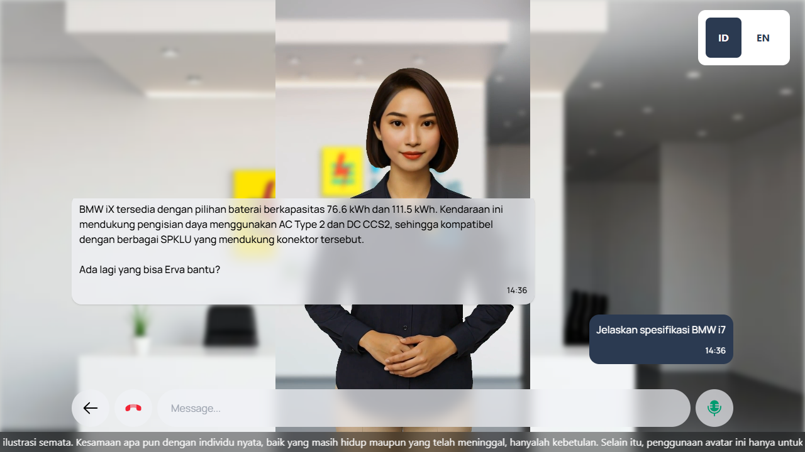 |
0.728 | PASS | 00:00:11 |
| 42 | Jelaskan spesifikasi Mercedes EQE / EQS | Jelaskan spesifikasi Mercedes EQE / EQS | Mercedes EQE memiliki baterai 90.6 kWh, sedangkan EQS 107.8 kWh. Keduanya mendukung AC Type 2 dan DC CCS2. | Mercedes EQE dilengkapi dengan baterai berkapasitas 90.6 kWh, sedangkan Mercedes EQS memiliki baterai yang lebih besar dengan kapasitas 107.8 kWh. Keduanya mendukung pengisian daya menggunakan AC Type 2 dan DC CCS2, sehingga dapat diisi daya di SPKLU yang mendukung konektor tersebut.Ada lagi yang bisa Erva bantu? | Auto: ✓ Jawaban baik (similarity: 72.3%). Mencakup poin-poin utama dengan tepat. |
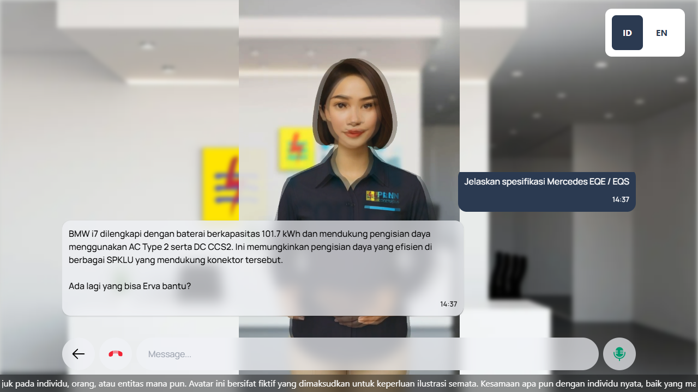 |
0.723 | PASS | 00:00:11 |
| 43 | Jelaskan spesifikasi Lexus UX 300e | Jelaskan spesifikasi Lexus UX 300e | Lexus UX 300e menggunakan baterai 54.3 kWh dan mendukung AC Type 2 serta DC CHAdeMO (tergantung ketersediaan SPKLU). | Lexus UX 300e dilengkapi dengan baterai berkapasitas 54.3 kWh dan mendukung pengisian daya menggunakan AC Type 2 serta DC CHAdeMO, tergantung pada ketersediaan SPKLU yang mendukung konektor tersebut.Ada lagi yang bisa Erva bantu? | Auto: ✓ Jawaban baik (similarity: 79.8%). Mencakup poin-poin utama dengan tepat. |
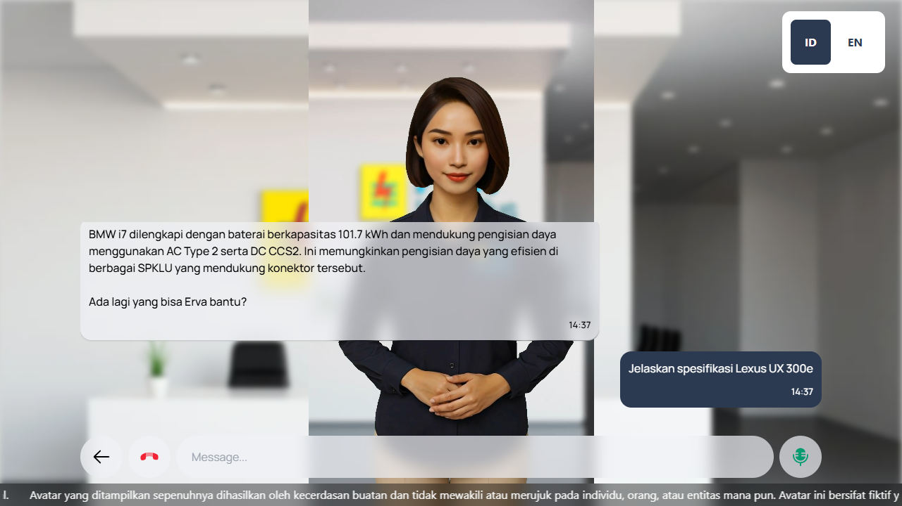 |
0.798 | PASS | 00:00:11 |
| 44 | Jelaskan spesifikasi Lexus RZ 450e | Jelaskan spesifikasi Lexus RZ 450e | Lexus RZ 450e menggunakan baterai 71.4 kWh dan mendukung AC Type 2 dan DC CCS2. | Lexus RZ 450e dilengkapi dengan baterai berkapasitas 71.4 kWh dan mendukung pengisian daya menggunakan AC Type 2 serta DC CCS2. Ini memungkinkan pengisian daya yang mudah di berbagai SPKLU yang mendukung konektor tersebut.Ada lagi yang bisa Erva bantu? | Auto: ✓ Jawaban baik (similarity: 71.4%). Mencakup poin-poin utama dengan tepat. |
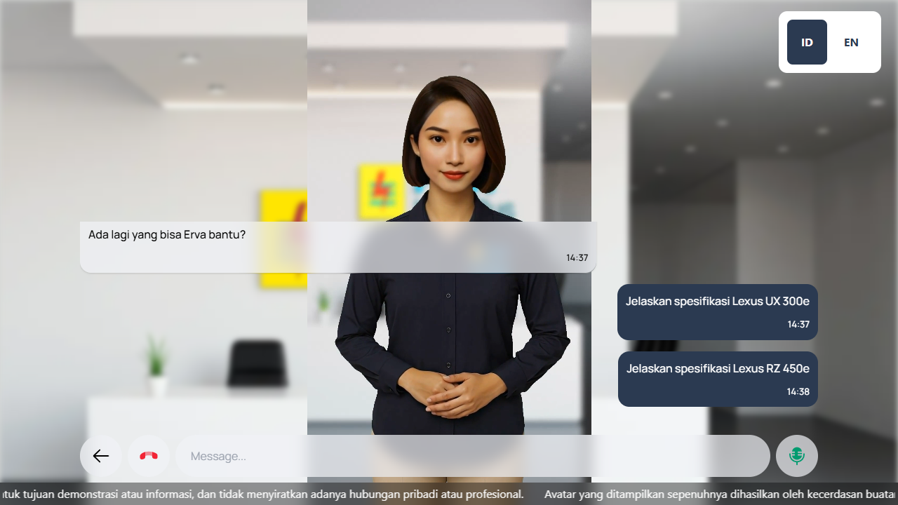 |
0.714 | PASS | 00:00:11 |
| 45 | Jelaskan spesifikasi BMW i4 | Jelaskan spesifikasi BMW i4 | BMW i4 menggunakan baterai 83.9 kWh dan mendukung AC Type 2 serta DC CCS2, cocok untuk SPKLU. | BMW i4 menggunakan baterai berkapasitas 83.9 kWh dan mendukung pengisian daya dengan AC Type 2 serta DC CCS2. Ini membuatnya cocok untuk diisi daya di SPKLU yang mendukung konektor tersebut.Ada lagi yang bisa Erva bantu? | Auto: ✓ Jawaban baik (similarity: 77.0%). Mencakup poin-poin utama dengan tepat. | 0.77 | PASS | 00:00:11 | |
| 46 | Jelaskan spesifikasi BMW iX | Jelaskan spesifikasi BMW iX | BMW iX tersedia baterai 76.6 kWh dan 111.5 kWh, mendukung AC Type 2 dan DC CCS2. | BMW iX tersedia dengan pilihan baterai berkapasitas 76.6 kWh dan 111.5 kWh. Kendaraan ini mendukung pengisian daya menggunakan AC Type 2 dan DC CCS2, sehingga kompatibel dengan berbagai SPKLU yang mendukung konektor tersebut.Ada lagi yang bisa Erva bantu? | Auto: ✓ Jawaban baik (similarity: 71.3%). Mencakup poin-poin utama dengan tepat. | 0.713 | PASS | 00:00:11 | |
| 47 | Jelaskan spesifikasi BMW i7 | Jelaskan spesifikasi BMW i7 | BMW i7 menggunakan baterai 101.7 kWh dan mendukung AC Type 2 dan DC CCS2. | Error: Tidak ada balasan dari bot. | ✗ Tidak ada respons dari bot. Tidak dapat dievaluasi. | 0 | FAILED | 00:00:27 | |
| 48 | Jelaskan spesifikasi Mercedes EQE / EQS | Jelaskan spesifikasi Mercedes EQE / EQS | Mercedes EQE memiliki baterai 90.6 kWh, sedangkan EQS 107.8 kWh. Keduanya mendukung AC Type 2 dan DC CCS2. | BMW i7 dilengkapi dengan baterai berkapasitas 101.7 kWh dan mendukung pengisian daya menggunakan AC Type 2 serta DC CCS2. Ini memungkinkan pengisian daya yang efisien di berbagai SPKLU yang mendukung konektor tersebut.Ada lagi yang bisa Erva bantu? | Auto: ⚠ Jawaban kurang lengkap (similarity: 52.7%). Hanya mencakup baterai dan sedangkan. Banyak info penting seperti mercedes, memiliki, keduanya belum disebutkan. | 0.527 | FAILED | 00:00:27 | |
| 49 | Jelaskan spesifikasi Lexus UX 300e | Jelaskan spesifikasi Lexus UX 300e | Lexus UX 300e menggunakan baterai 54.3 kWh dan mendukung AC Type 2 serta DC CHAdeMO (tergantung ketersediaan SPKLU). | Error: Tidak ada balasan dari bot. | ✗ Tidak ada respons dari bot. Tidak dapat dievaluasi. | 0 | FAILED | 00:00:27 | |
| 50 | Jelaskan spesifikasi Lexus RZ 450e | Jelaskan spesifikasi Lexus RZ 450e | Lexus RZ 450e menggunakan baterai 71.4 kWh dan mendukung AC Type 2 dan DC CCS2. | Error: Tidak ada balasan dari bot. | ✗ Tidak ada respons dari bot. Tidak dapat dievaluasi. | 0 | FAILED | 00:00:27 | |
| 51 | Bagaimana cara menghitung lama charging mobil listrik | Bagaimana cara menghitung lama charging mobil listrik | Cara sederhana menghitung lama charging adalah kapasitas baterai di bagi dengan daya charger. Contoh baterai enam puluh kilo watt hour di isi dengan charger sepuluh kilo watt maka perkiraan waktunya sekitar enam jam. | Error: Tidak ada balasan dari bot. | ✗ Tidak ada respons dari bot. Tidak dapat dievaluasi. | 0 | FAILED | 00:00:27 | |
| 52 | Apa itu kilo watt hour pada mobil listrik | Apa itu kilo watt hour pada mobil listrik | Kilo watt hour adalah kapasitas energi baterai mobil. Semakin besar angkanya, semakin banyak energi yang bisa disimpan. | Error: Tidak ada balasan dari bot. | ✗ Tidak ada respons dari bot. Tidak dapat dievaluasi. | 0 | FAILED | 00:00:27 | |
| 53 | Apa itu kilo watt pada charger | Apa itu kilo watt pada charger | Kilowatt adalah satuan daya yang menunjukkan kecepatan aliran listrik dari charger ke mobil. Semakin besar daya charger, semakin cepat potensi pengisian. | Error: Tidak ada balasan dari bot. | ✗ Tidak ada respons dari bot. Tidak dapat dievaluasi. | 0 | FAILED | 00:00:27 | |
| 54 | Kenapa charger besar tidak selalu mengisi cepat | Kenapa charger besar tidak selalu mengisi cepat | Karena kendaraan mengatur sendiri kecepatan pengisian untuk menjaga keamanan dan umur baterai. | Error: Tidak ada balasan dari bot. | ✗ Tidak ada respons dari bot. Tidak dapat dievaluasi. | 0 | FAILED | 00:00:27 | |
| 55 | Apakah mobil selalu menerima daya maksimal charger | Apakah mobil selalu menerima daya maksimal charger | Tidak. Mobil hanya menerima daya sesuai kemampuan baterai dan kondisi saat pengisian berlangsung. | Error: Tidak ada balasan dari bot. | ✗ Tidak ada respons dari bot. Tidak dapat dievaluasi. |
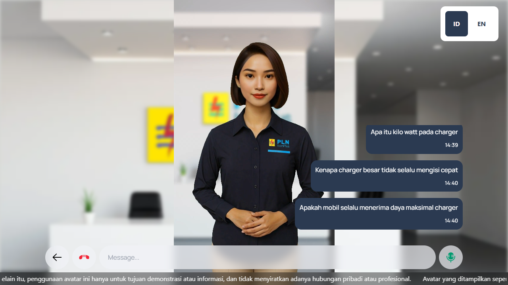 |
0 | FAILED | 00:00:26 |
| 56 | Kalau baterai 50 kilo watt hour pakai charger 70 kilo watt berapa lama | Kalau baterai 50 kilo watt hour pakai charger 70 kilo watt berapa lama | Perkiraan waktu pengisian sekitar 7–8 jam, tergantung kondisi awal baterai. | Error: Tidak ada balasan dari bot. | ✗ Tidak ada respons dari bot. Tidak dapat dievaluasi. |
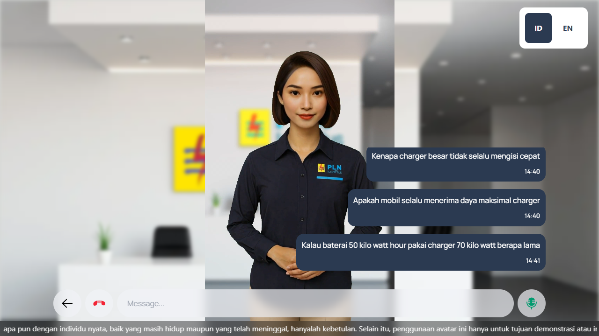 |
0 | FAILED | 00:00:26 |
| 57 | Kalau baterai 60 kilo watt hour pakai charger 11 kilo watt berapa lama | Kalau baterai 60 kilo watt hour pakai charger 11 kilo watt berapa lama | Perkiraan waktu pengisian sekitar 5–6 jam, tergantung kondisi baterai. | Error: Tidak ada balasan dari bot. | ✗ Tidak ada respons dari bot. Tidak dapat dievaluasi. |
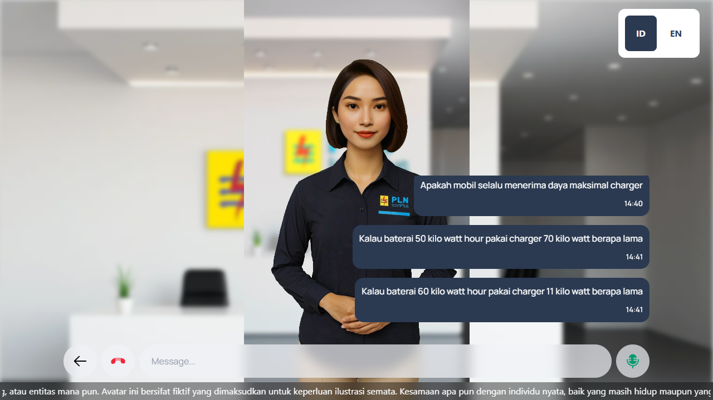 |
0 | FAILED | 00:00:26 |
| 58 | Kalau pakai DC enam puluh kilo watt baterai enam puluh kilo watt hour berapa lama | Kalau pakai DC enam puluh kilo watt baterai enam puluh kilo watt hour berapa lama | Secara teori sekitar 1 jam, namun dalam praktik biasanya menjadi 1–1,5 jam karena kecepatan akan menurun saat baterai mendekati penuh. | Error: Tidak ada balasan dari bot. | ✗ Tidak ada respons dari bot. Tidak dapat dievaluasi. |
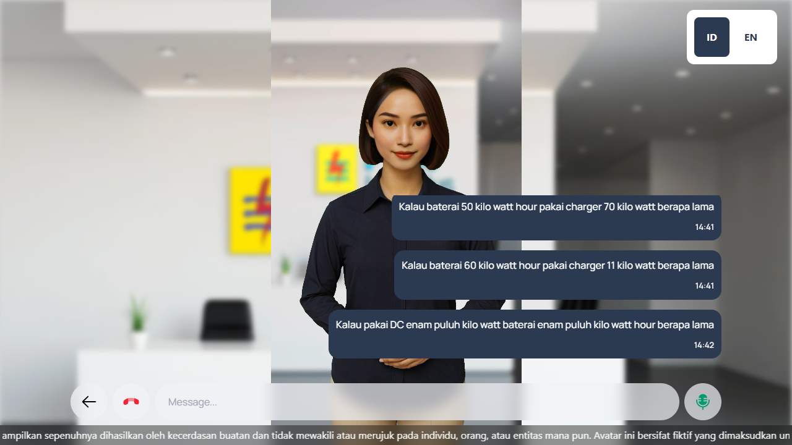 |
0 | FAILED | 00:00:26 |
| 59 | Kenapa charging cepat di awal lalu melambat | Kenapa charging cepat di awal lalu melambat | Sistem kendaraan akan menurunkan kecepatan pengisian saat kapasitas baterai sudah tinggi untuk melindungi baterai. | Error: Tidak ada balasan dari bot. | ✗ Tidak ada respons dari bot. Tidak dapat dievaluasi. |
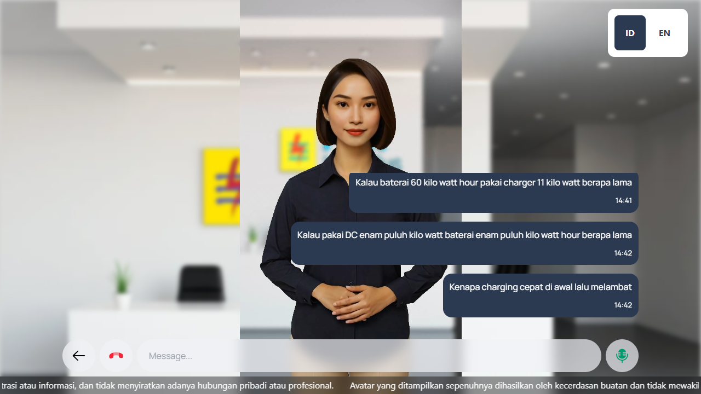 |
0 | FAILED | 00:00:27 |
| 60 | Lebih cepat charge dari dua puluh ke delapan puluh atau delapan puluh ke penuh | Lebih cepat charge dari dua puluh ke delapan puluh atau delapan puluh ke penuh | Pengisian dari 20 persen ke 80 persen jauh lebih cepat dibandingkan dari 80 persen ke 100 persen. | Error: Tidak ada balasan dari bot. | ✗ Tidak ada respons dari bot. Tidak dapat dievaluasi. |
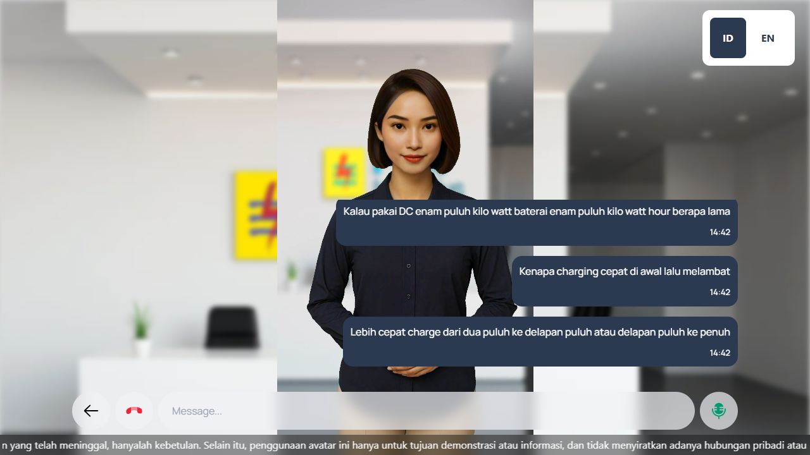 |
0 | FAILED | 00:00:27 |
| 61 | Kenapa dari delapan puluh ke penuh lama sekali | Kenapa dari delapan puluh ke penuh lama sekali | Karena kendaraan memperlambat arus pengisian untuk menjaga sel baterai tetap aman. | Error: Tidak ada balasan dari bot. | ✗ Tidak ada respons dari bot. Tidak dapat dievaluasi. |
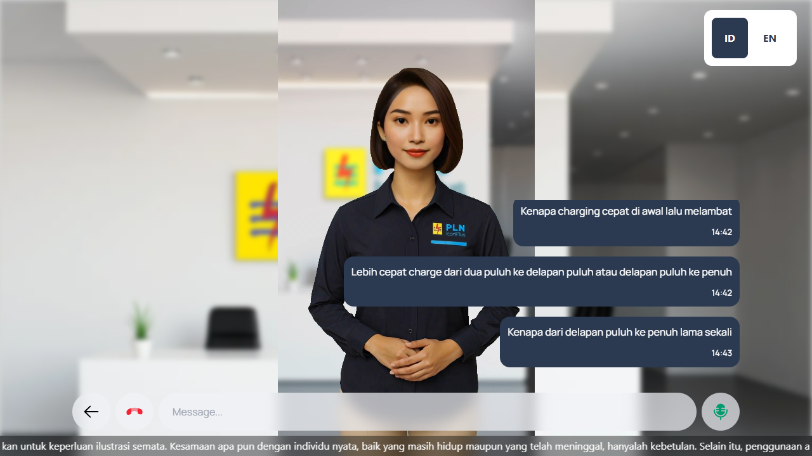 |
0 | FAILED | 00:00:26 |
| 62 | Apakah aman berhenti charging di delapan puluh | Apakah aman berhenti charging di delapan puluh | Aman. Berhenti di sekitar 80persen umum dilakukan, terutama saat menggunakan fast charging. | Error: Tidak ada balasan dari bot. | ✗ Tidak ada respons dari bot. Tidak dapat dievaluasi. |
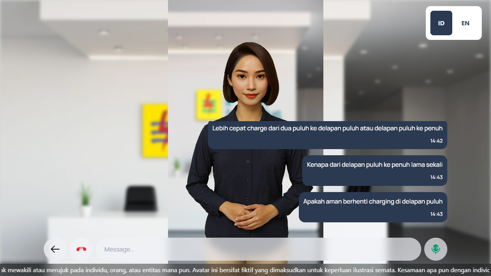 |
0 | FAILED | 00:00:26 |
| 63 | Apakah harus selalu charge sampai penuh | Apakah harus selalu charge sampai penuh | Tidak harus. Untuk penggunaan harian, pengisian hingga 80–90 persen sudah cukup. | Mercedes EQE dilengkapi dengan baterai berkapasitas 90.6 kWh, sedangkan Mercedes EQS memiliki baterai yang lebih besar dengan kapasitas 107.8 kWh. Keduanya mendukung pengisian daya menggunakan AC Type 2 dan DC CCS2, sehingga dapat diisi daya di SPKLU yang mendukung konektor tersebut.Ada lagi yang bisa Erva bantu? | Auto: ✗ Jawaban tidak cukup relevan (similarity: 31.3%). Sebagian besar info penting seperti tidak, harus, untuk tidak disebutkan. | 0.313 | FAILED | 00:00:17 | |
| 64 | Kenapa charging saya lebih lama dari perkiraan | Kenapa charging saya lebih lama dari perkiraan | Bisa karena baterai sudah tinggi, suhu lingkungan, atau daya SPKLU sedang terbagi dengan kendaraan lain. | Lexus UX 300e menggunakan baterai berkapasitas 54.3 kWh dan mendukung pengisian daya dengan AC Type 2 serta DC CHAdeMO, tergantung pada ketersediaan SPKLU yang mendukung konektor tersebut.Ada lagi yang bisa Erva bantu? Lexus RZ 450e dilengkapi dengan baterai berkapasitas 71.4 kWh dan mendukung pengisian daya menggunakan AC Type 2 serta DC CCS2. Ini memungkinkan pengisian daya yang fleksibel di berbagai SPKLU yang mendukung konektor tersebut.Ada lagi yang bisa Erva bantu? | Auto: ✗ Jawaban tidak cukup relevan (similarity: 37.5%). Sebagian besar info penting seperti karena, sudah, tinggi tidak disebutkan. | 0.375 | FAILED | 00:00:11 | |
| 65 | Apakah suhu mempengaruhi kecepatan charging | Apakah suhu mempengaruhi kecepatan charging | Ya, suhu yang terlalu panas atau terlalu dingin bisa membuat mobil mengurangi kecepatan charging. | Untuk menghitung lama charging mobil listrik, Anda dapat menggunakan cara sederhana dengan membagi kapasitas baterai dengan daya charger. Misalnya, jika baterai memiliki kapasitas 60 kWh dan diisi dengan charger berdaya 10 kW, maka perkiraan waktu pengisian adalah sekitar 6 jam. Namun, perlu diingat bahwa ini adalah perkiraan, dan kecepatan pengisian aktual dapat dipengaruhi oleh kondisi baterai dan sistem kendaraan.Ada lagi yang bisa Erva bantu? Kilo watt hour pada mobil listrik adalah ukuran kapasitas energi yang dapat disimpan oleh baterai mobil. Semakin besar angka kilo watt hour, semakin banyak energi yang bisa disimpan, yang berarti mobil dapat menempuh jarak lebih jauh sebelum perlu diisi ulang.Ada lagi yang bisa Erva bantu? | Auto: ✗ Jawaban tidak cukup relevan (similarity: 31.9%). Sebagian besar info penting seperti suhu, terlalu, panas tidak disebutkan. |
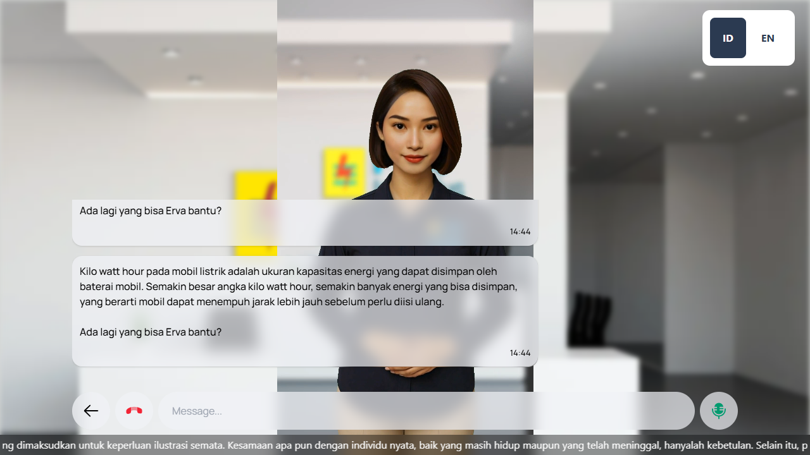 |
0.319 | FAILED | 00:00:11 |
| 66 | Jika SPKLU dipakai banyak mobil apa pengaruhnya | Jika SPKLU dipakai banyak mobil apa pengaruhnya | Pada beberapa lokasi, daya bisa dibagi otomatis sehingga kecepatan charging bisa menurun. | Meskipun charger berdaya besar memiliki potensi untuk mengisi lebih cepat, kendaraan listrik mengatur sendiri kecepatan pengisian untuk menjaga keamanan dan umur baterai. Ini berarti bahwa meskipun daya charger besar, kecepatan pengisian bisa disesuaikan oleh sistem kendaraan agar tetap aman dan efisien.Ada lagi yang bisa Erva bantu? | Auto: ✗ Jawaban tidak cukup relevan (similarity: 39.4%). Sebagian besar info penting seperti beberapa, lokasi, dibagi tidak disebutkan. |
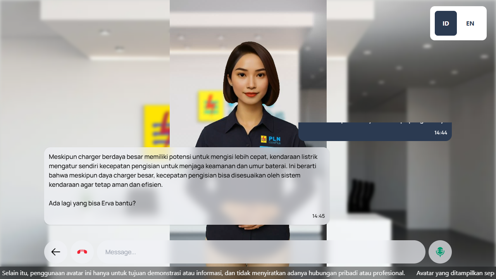 |
0.394 | FAILED | 00:00:11 |
| 67 | Kenapa mobil saya hanya dapat tiga puluh kilo watt padahal charger enam puluh kilo watt | Kenapa mobil saya hanya dapat tiga puluh kilo watt padahal charger enam puluh kilo watt | Mobil mengambil daya sesuai kemampuan baterai dan kondisi saat itu, hal ini normal. | Tidak, mobil tidak selalu menerima daya maksimal dari charger. Mobil hanya menerima daya sesuai dengan kemampuan baterai dan kondisi saat pengisian berlangsung. Ini memastikan bahwa pengisian dilakukan dengan aman dan efisien sesuai dengan kebutuhan dan kapasitas baterai.Ada lagi yang bisa Erva bantu? | Auto: ⚠ Jawaban kurang lengkap (similarity: 59.4%). Hanya mencakup mobil dan daya. Banyak info penting seperti mengambil, normal belum disebutkan. |
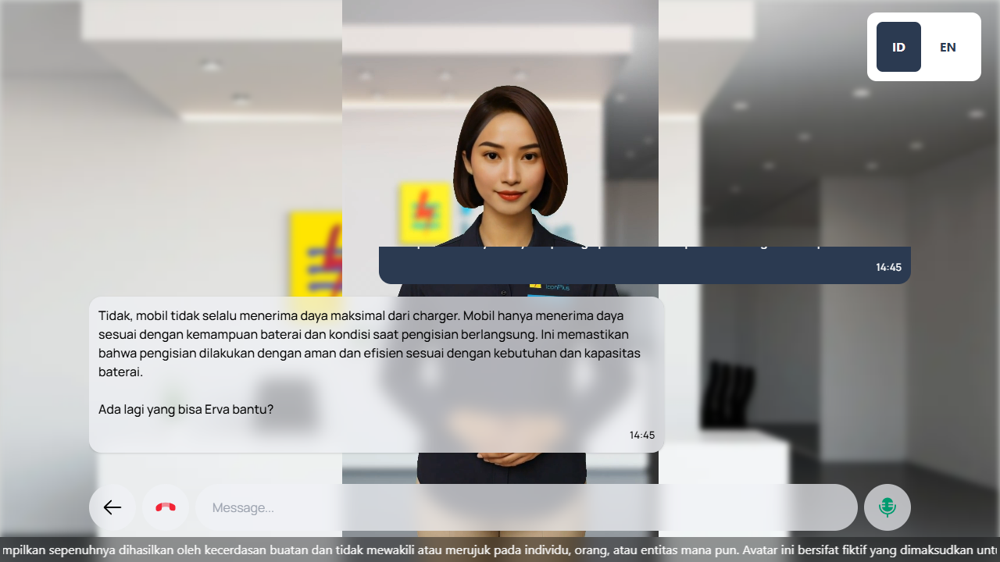 |
0.594 | FAILED | 00:00:11 |
| 68 | Lebih cepat AC atau DC | Lebih cepat AC atau DC | DC jauh lebih cepat, sedangkan AC cocok untuk pengisian santai dan parkir lama. | Perkiraan waktu pengisian untuk baterai 50 kilo watt hour dengan charger 70 kilo watt adalah sekitar 7 hingga 8 jam, tergantung pada kondisi awal baterai.Ada lagi yang bisa Erva bantu? Perkiraan waktu pengisian untuk baterai 60 kilo watt hour dengan charger 11 kilo watt adalah sekitar 5 hingga 6 jam, tergantung pada kondisi baterai.Ada lagi yang bisa Erva bantu? | Auto: ✗ Jawaban tidak cukup relevan (similarity: 26.9%). Sebagian besar info penting seperti jauh, lebih, cepat tidak disebutkan. | 0.269 | FAILED | 00:00:11 | |
| 69 | Kapan sebaiknya pakai AC charging | Kapan sebaiknya pakai AC charging | Saat tidak terburu buru, parkir lama, atau mengisi di rumah dan kantor. | Secara teori, pengisian baterai 60 kilo watt hour dengan charger DC 60 kilo watt memakan waktu sekitar 1 jam. Namun, dalam praktiknya, biasanya memakan waktu 1 hingga 1,5 jam karena kecepatan pengisian akan menurun saat baterai mendekati penuh.Ada lagi yang bisa Erva bantu? Sistem kendaraan akan menurunkan kecepatan pengisian saat kapasitas baterai sudah tinggi untuk melindungi baterai. Ini adalah mekanisme yang dirancang untuk menjaga kesehatan dan umur panjang baterai.Ada lagi yang bisa Erva bantu? | Auto: ✗ Jawaban tidak cukup relevan (similarity: 21.2%). Sebagian besar info penting seperti tidak, terburu, buru tidak disebutkan. | 0.212 | FAILED | 00:00:11 | |
| 70 | Kapan sebaiknya pakai DC fast charging | Kapan sebaiknya pakai DC fast charging | Saat butuh pengisian cepat seperti saat perjalanan jauh. | Pengisian dari 80 persen ke penuh memakan waktu lebih lama karena kendaraan memperlambat arus pengisian untuk menjaga sel baterai tetap aman. Ini adalah langkah pencegahan untuk memastikan baterai tidak mengalami kerusakan dan dapat bertahan lebih lama.Ada lagi yang bisa Erva bantu? Aman. Berhenti di sekitar 80 persen umum dilakukan, terutama saat menggunakan fast charging.Ada lagi yang bisa Erva bantu? | Auto: ✗ Jawaban tidak cukup relevan (similarity: 31.7%). Sebagian besar info penting seperti butuh, cepat, seperti tidak disebutkan. | 0.317 | FAILED | 00:00:11 | |
| 71 | Apakah fast charging merusak baterai | Apakah fast charging merusak baterai | Tidak. Fast charging aman selama digunakan sesuai rekomendasi pabrikan dan tidak digunakan terus-menerus setiap hari. | Tidak harus. Untuk penggunaan harian, pengisian hingga 80–90 persen sudah cukup. Ini membantu menjaga kesehatan baterai dalam jangka panjang.Ada lagi yang bisa Erva bantu? Ada beberapa faktor yang bisa membuat charging lebih lama dari perkiraan. Salah satunya adalah jika baterai sudah dalam kondisi tinggi, suhu lingkungan yang tidak ideal, atau daya SPKLU sedang terbagi dengan kendaraan lain. Semua ini dapat mempengaruhi kecepatan pengisian.Ada lagi yang bisa Erva bantu? Ya, suhu yang terlalu panas atau terlalu dingin dapat mempengaruhi kecepatan dan stabilitas proses charging. Jika suhu tidak ideal, kendaraan mungkin mengurangi kecepatan pengisian untuk melindungi baterai.Ada lagi yang bisa Erva bantu? | Auto: ✗ Jawaban tidak cukup relevan (similarity: 32.4%). Sebagian besar info penting seperti fast, aman, digunakan tidak disebutkan. |
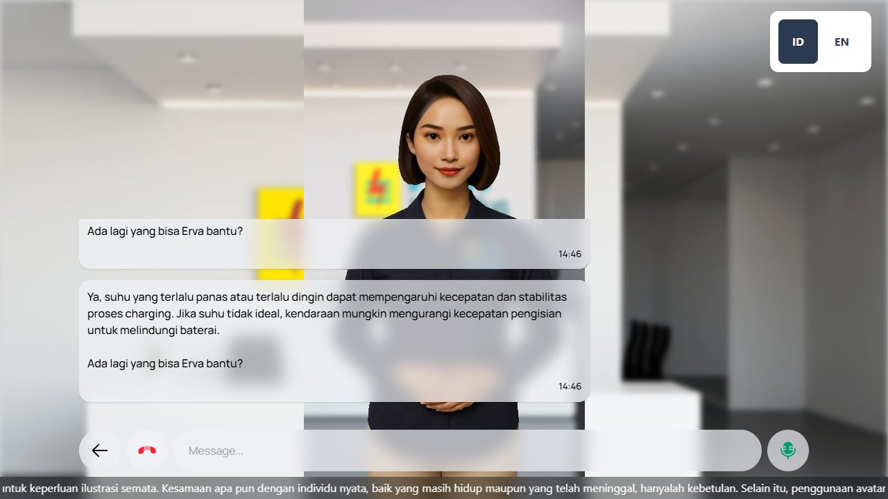 |
0.324 | FAILED | 00:00:11 |
| 72 | Kenapa mobil berhenti charging sendiri | Kenapa mobil berhenti charging sendiri | Charging dapat berhenti karena baterai sudah penuh, sesi charging selesai, atau sistem proteksi kendaraan aktif. | Ketika SPKLU digunakan oleh banyak mobil, daya bisa dibagi secara otomatis di beberapa lokasi. Hal ini dapat menyebabkan kecepatan charging menurun, sehingga waktu pengisian bisa lebih lama dari perkiraan.Ada lagi yang bisa Erva bantu? Mobil Anda mengambil daya sesuai dengan kemampuan baterai dan kondisi saat itu. Jadi, meskipun charger memiliki kapasitas enam puluh kilowatt, mobil Anda mungkin hanya mengambil tiga puluh kilowatt, dan ini adalah hal yang normal.Ada lagi yang bisa Erva bantu? DC charging lebih cepat dibandingkan dengan AC charging. Jika Anda membutuhkan pengisian daya yang cepat, DC adalah pilihan yang lebih tepat.Ada lagi yang bisa Erva bantu? | Auto: ✗ Jawaban tidak cukup relevan (similarity: 28.5%). Sebagian besar info penting seperti berhenti, karena, sudah tidak disebutkan. |
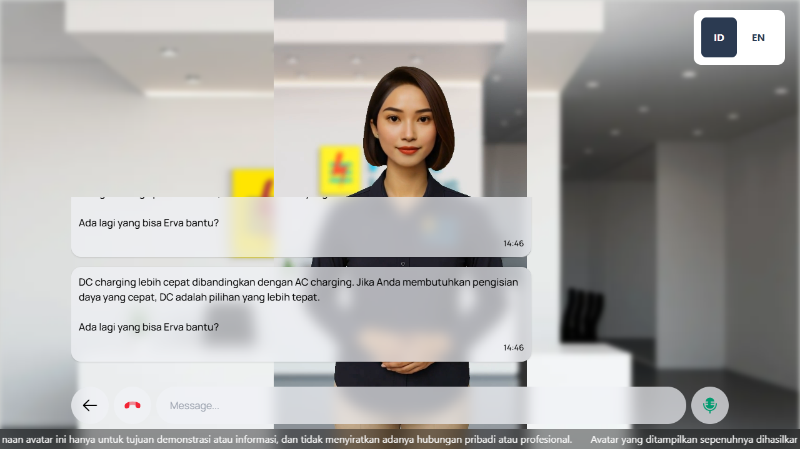 |
0.285 | FAILED | 00:00:11 |
| 73 | Apakah ganti kabel bisa bikin charging lebih cepat | Apakah ganti kabel bisa bikin charging lebih cepat | Tidak. Kecepatan charging ditentukan oleh kemampuan charger dan kendaraan, bukan oleh kabel. | AC charging sebaiknya digunakan saat Anda tidak terburu-buru, seperti ketika kendaraan diparkir dalam waktu yang cukup lama, atau saat mengisi daya di rumah dan kantor.Ada lagi yang bisa Erva bantu? DC fast charging sebaiknya digunakan saat Anda membutuhkan pengisian daya yang cepat, seperti ketika sedang dalam perjalanan jauh dan perlu mengisi daya dengan segera agar dapat melanjutkan perjalanan.Ada lagi yang bisa Erva bantu? Fast charging tidak merusak baterai selama digunakan sesuai dengan rekomendasi pabrikan dan tidak digunakan terus-menerus setiap hari. Penggunaan yang bijak akan membantu menjaga kesehatan baterai.Ada lagi yang bisa Erva bantu? | Auto: ✗ Jawaban tidak cukup relevan (similarity: 35.5%). Sebagian besar info penting seperti oleh, kemampuan, charger tidak disebutkan. | 0.355 | FAILED | 00:00:11 | |
| 74 | Apakah charging malam hari lebih cepat | Apakah charging malam hari lebih cepat | Kecepatan charging ditentukan oleh charger dan kendaraan, namun suhu malam hari yang lebih stabil dapat membantu proses pengisian. | Tidak, mengganti kabel tidak akan membuat charging lebih cepat. Kecepatan charging ditentukan oleh kemampuan charger dan kendaraan, bukan oleh kabel.Ada lagi yang bisa Erva bantu? Kecepatan charging sebenarnya ditentukan oleh charger dan kendaraan itu sendiri. Namun, suhu malam hari yang lebih stabil dapat membantu proses pengisian menjadi lebih efisien.Ada lagi yang bisa Erva bantu? | Auto: ✓ Jawaban baik (similarity: 73.8%). Mencakup poin-poin utama dengan tepat. |
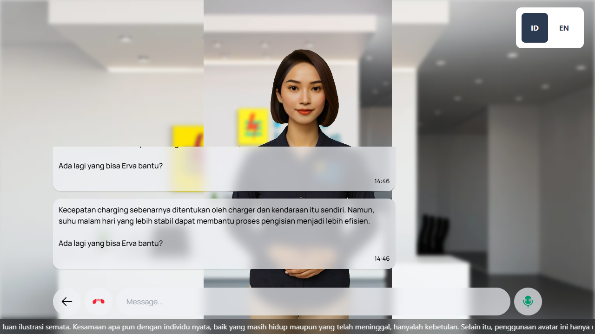 |
0.738 | PASS | 00:00:11 |
| 75 | Kenapa hasil hitungan berbeda dengan kenyataan | Kenapa hasil hitungan berbeda dengan kenyataan | Perhitungan waktu charging bersifat perkiraan. Kecepatan aktual dipengaruhi kondisi baterai dan sistem kendaraan. | Perhitungan waktu charging bersifat perkiraan, dan kecepatan aktualnya bisa dipengaruhi oleh kondisi baterai dan sistem kendaraan. Jadi, hasil hitungan bisa berbeda dengan kenyataan.Ada lagi yang bisa Erva bantu? | Auto: ✓ Jawaban baik (similarity: 84.7%). Mencakup poin-poin utama dengan tepat. | 0.847 | PASS | 00:00:11 | |
| 76 | Saya ingin angka pasti lama charging | Saya ingin angka pasti lama charging | Angka pasti tidak dapat ditentukan. Estimasi paling akurat dapat dilihat melalui indikator di layar kendaraan atau aplikasi PLN Mobile. | Angka pasti untuk lama charging tidak dapat ditentukan. Estimasi paling akurat dapat dilihat melalui indikator di layar kendaraan atau aplikasi PLN Mobile.Ada lagi yang bisa Erva bantu? | Auto: ✓ Jawaban sangat baik dan lengkap (similarity: 92.4%). Semua informasi penting tercakup dengan akurat. | 0.924 | PASS | 00:00:11 | |
| 77 | Apakah SPKLU ini sedang beroperasi normal | Apakah SPKLU ini sedang beroperasi normal | Status SPKLU dapat berubah tergantung kondisi sistem. Jika tidak bisa digunakan, silakan cek informasi di aplikasi PLN Mobile. | Status SPKLU dapat berubah tergantung kondisi sistem. Jika Anda mengalami kesulitan dalam menggunakannya, saya sarankan untuk memeriksa informasi lebih lanjut melalui aplikasi PLN Mobile.Ada lagi yang bisa Erva bantu? | Auto: ✓ Jawaban baik (similarity: 71.4%). Mencakup poin-poin utama dengan tepat. |
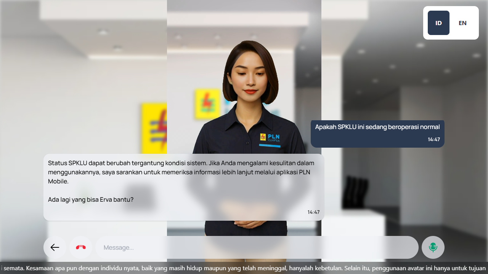 |
0.714 | PASS | 00:00:11 |
| 78 | Kenapa SPKLU tiba tiba tidak bisa digunakan | Kenapa SPKLU tiba tiba tidak bisa digunakan | SPKLU bisa saja sedang dalam pemeliharaan atau proses sinkronisasi sistem. | SPKLU bisa saja sedang dalam pemeliharaan atau proses sinkronisasi sistem. Jika Anda mengalami masalah, mungkin itu penyebabnya.Ada lagi yang bisa Erva bantu? | Auto: ✓ Jawaban baik (similarity: 84.9%). Mencakup poin-poin utama dengan tepat. | 0.849 | PASS | 00:00:11 | |
| 79 | Kenapa SPKLU terlihat menyala tapi tidak bisa charging | Kenapa SPKLU terlihat menyala tapi tidak bisa charging | Lampu dan layar aktif tidak selalu berarti SPKLU siap digunakan. Sistem bisa sedang melakukan pengecekan internal. | Lampu dan layar yang aktif pada SPKLU tidak selalu berarti bahwa stasiun tersebut siap digunakan. Sistem mungkin sedang melakukan pengecekan internal, sehingga tidak dapat digunakan untuk charging pada saat itu.Ada lagi yang bisa Erva bantu? | Auto: ✓ Jawaban baik (similarity: 80.2%). Mencakup poin-poin utama dengan tepat. | 0.802 | PASS | 00:00:18 | |
| 80 | Kenapa SPKLU restart sendiri | Kenapa SPKLU restart sendiri | Restart otomatis dapat terjadi untuk menjaga kestabilan dan keamanan sistem. | Error: Tidak ada balasan dari bot. | ✗ Tidak ada respons dari bot. Tidak dapat dievaluasi. |
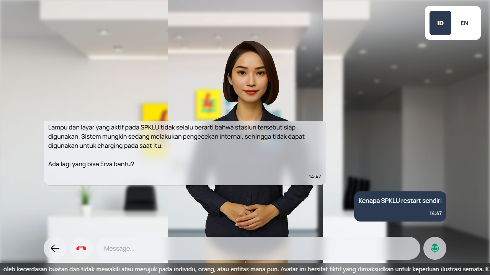 |
0 | FAILED | 00:00:27 |
| 81 | Apakah ada sistem antrian di SPKLU | Apakah ada sistem antrian di SPKLU | Umumnya belum ada sistem antrian otomatis. Pengguna diharapkan saling bergantian dengan tertib. | Restart otomatis pada SPKLU dapat terjadi untuk menjaga kestabilan dan keamanan sistem. Ini adalah langkah yang diambil untuk memastikan operasional yang aman dan efisien.Ada lagi yang bisa Erva bantu? | Auto: ✗ Jawaban tidak cukup relevan (similarity: 33.8%). Sebagian besar info penting seperti umumnya, belum, antrian tidak disebutkan. | 0.338 | FAILED | 00:00:17 | |
| 82 | Bagaimana jika ada mobil lain yang menunggu | Bagaimana jika ada mobil lain yang menunggu | Sebaiknya gunakan SPKLU sesuai kebutuhan dan segera pindahkan kendaraan setelah charging selesai. | Error: Tidak ada balasan dari bot. | ✗ Tidak ada respons dari bot. Tidak dapat dievaluasi. |
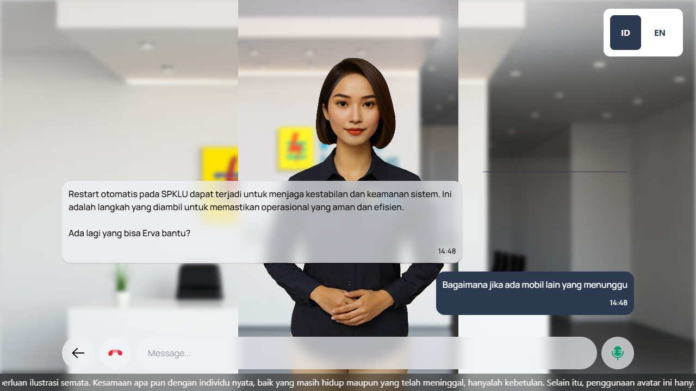 |
0 | FAILED | 00:00:27 |
| 83 | Berapa lama sebaiknya charging di SPKLU umum | Berapa lama sebaiknya charging di SPKLU umum | Waktu charging disesuaikan kebutuhan, namun disarankan tidak berlama lama agar pengguna lain dapat mengakses SPKLU. | Umumnya, belum ada sistem antrian otomatis di SPKLU. Pengguna diharapkan untuk saling bergantian dengan tertib saat menggunakan fasilitas tersebut.Ada lagi yang bisa Erva bantu? Sebaiknya gunakan SPKLU sesuai kebutuhan dan segera pindahkan kendaraan Anda setelah charging selesai. Ini akan membantu pengguna lain yang sedang menunggu untuk dapat menggunakan fasilitas tersebut.Ada lagi yang bisa Erva bantu? | Auto: ⚠ Jawaban kurang lengkap (similarity: 46.7%). Hanya mencakup charging dan disesuaikan. Banyak info penting seperti waktu, namun, tidak belum disebutkan. |
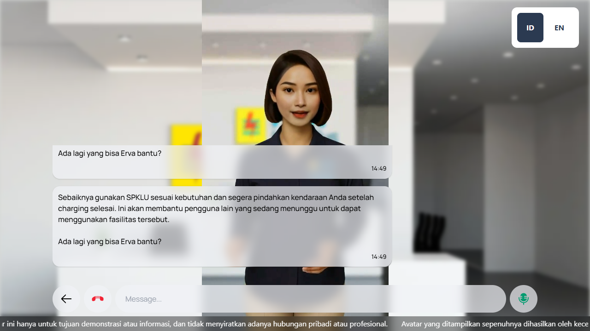 |
0.467 | FAILED | 00:00:11 |
| 84 | Apakah saya boleh meminta pengguna lain untuk berhenti charging | Apakah saya boleh meminta pengguna lain untuk berhenti charging | Sebaiknya disampaikan secara sopan. SPKLU digunakan bersama dan mengutamakan kenyamanan semua pengguna. | Error: Tidak ada balasan dari bot. | ✗ Tidak ada respons dari bot. Tidak dapat dievaluasi. |
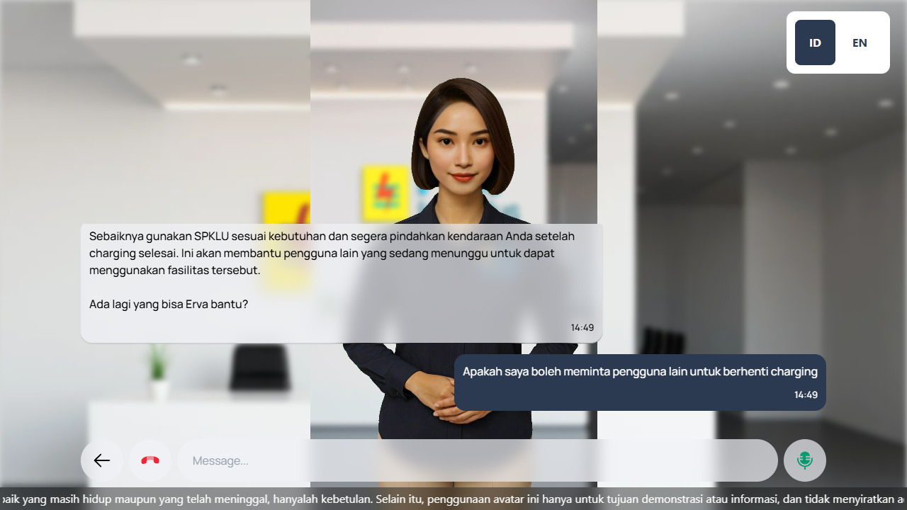 |
0 | FAILED | 00:00:27 |
| 85 | Apa yang harus saya lakukan setelah charging selesai | Apa yang harus saya lakukan setelah charging selesai | Setelah charging selesai, silakan akhiri sesi di aplikasi dan lepaskan nozzle dengan aman. | Anda boleh meminta pengguna lain untuk berhenti charging, tetapi sebaiknya disampaikan secara sopan. SPKLU digunakan bersama dan mengutamakan kenyamanan semua pengguna.Ada lagi yang bisa Erva bantu? Setelah charging selesai, sebaiknya segera pindahkan kendaraan Anda agar SPKLU dapat digunakan oleh pelanggan lain. Ini membantu memastikan bahwa fasilitas tersebut dapat diakses oleh semua pengguna yang membutuhkannya.Ada lagi yang bisa Erva bantu? | Auto: ✗ Jawaban tidak cukup relevan (similarity: 36.4%). Sebagian besar info penting seperti silakan, akhiri, sesi tidak disebutkan. | 0.364 | FAILED | 00:00:11 | |
| 86 | Apakah saya harus menekan tombol selesai di aplikasi | Apakah saya harus menekan tombol selesai di aplikasi | Ya, sesi charging sebaiknya diakhiri melalui aplikasi sebelum melepas nozzle. | Ya, sesi charging sebaiknya diakhiri melalui aplikasi sebelum melepas nozzle. Ini memastikan bahwa proses charging benar-benar selesai dan aman untuk mencabut konektor.Ada lagi yang bisa Erva bantu? | Auto: ✓ Jawaban baik (similarity: 81.5%). Mencakup poin-poin utama dengan tepat. | 0.815 | PASS | 00:00:11 | |
| 87 | Kapan saya boleh mencabut nozzle | Kapan saya boleh mencabut nozzle | Nozzle dapat dilepas setelah sesi charging dihentikan dan sistem membuka kunci otomatis. | Anda dapat mencabut nozzle setelah sesi charging dihentikan dan sistem membuka kunci otomatis. Pastikan untuk mengakhiri sesi melalui aplikasi terlebih dahulu agar proses ini berjalan dengan lancar.Ada lagi yang bisa Erva bantu? | Auto: ✓ Jawaban baik (similarity: 72.8%). Mencakup sebagian besar informasi. Akan lebih sempurna dengan dilepas. | 0.728 | PASS | 00:00:11 | |
| 88 | Apa yang terjadi jika saya lupa mencabut charger | Apa yang terjadi jika saya lupa mencabut charger | Charging akan berhenti otomatis, namun sebaiknya segera lepaskan nozzle agar SPKLU bisa digunakan pengguna lain. | Jika Anda lupa mencabut charger, charging akan berhenti secara otomatis. Namun, sebaiknya segera lepaskan nozzle agar SPKLU bisa digunakan oleh pengguna lain. Ini membantu memastikan ketersediaan fasilitas untuk semua pengguna.Ada lagi yang bisa Erva bantu? | Auto: ✓ Jawaban baik (similarity: 81.6%). Mencakup poin-poin utama dengan tepat. |
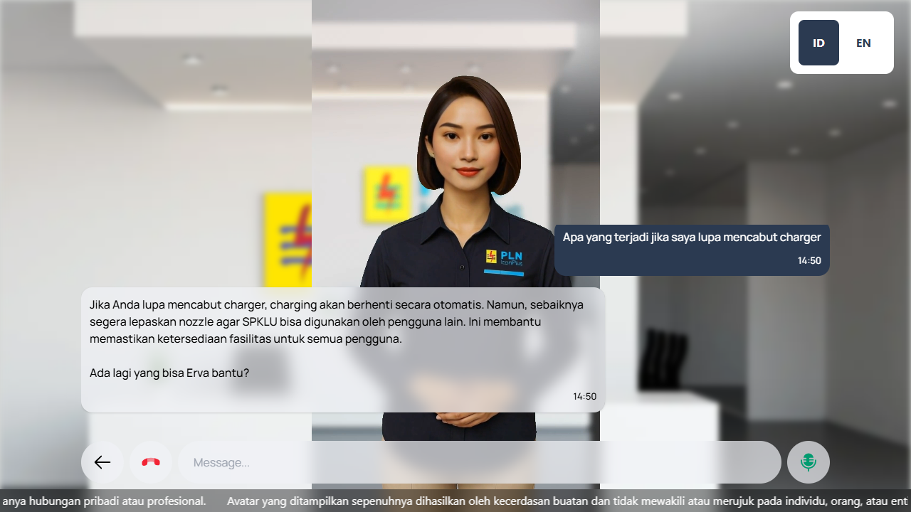 |
0.816 | PASS | 00:00:11 |
| 89 | Apakah ada notifikasi saat charging selesai | Apakah ada notifikasi saat charging selesai | Informasi charging selesai biasanya muncul di aplikasi dan layar mobil. | Ya, informasi charging selesai biasanya muncul di aplikasi dan layar mobil Anda. Ini membantu Anda mengetahui kapan proses charging telah selesai.Ada lagi yang bisa Erva bantu? | Auto: ✓ Jawaban baik (similarity: 82.4%). Mencakup poin-poin utama dengan tepat. |
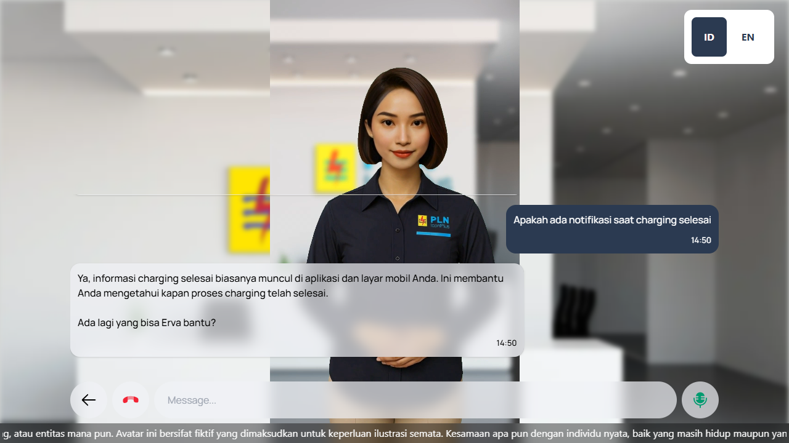 |
0.824 | PASS | 00:00:11 |
| 90 | Di mana saya bisa melihat riwayat charging | Di mana saya bisa melihat riwayat charging | Riwayat charging dapat dilihat melalui aplikasi PLN Mobile. | Anda dapat melihat riwayat charging melalui aplikasi PLN Mobile. Aplikasi ini menyediakan informasi lengkap mengenai sesi charging yang telah Anda lakukan.Ada lagi yang bisa Erva bantu? | Auto: ⚠ Jawaban cukup (similarity: 65.7%). Benar untuk riwayat dan charging, tapi kurang lengkap. Perlu dilihat. | 0.657 | FAILED | 00:00:11 | |
| 91 | Apakah saya bisa melihat rincian energi yang terpakai | Apakah saya bisa melihat rincian energi yang terpakai | Informasi energi yang terpakai tersedia di aplikasi setelah sesi charging selesai. | Tentu, Anda bisa melihat rincian energi yang terpakai di aplikasi setelah sesi charging selesai. Informasi ini akan membantu Anda memantau penggunaan energi dengan lebih baik.Ada lagi yang bisa Erva bantu? | Auto: ⚠ Jawaban cukup (similarity: 69.6%). Benar untuk informasi dan energi, tapi kurang lengkap. Perlu . |
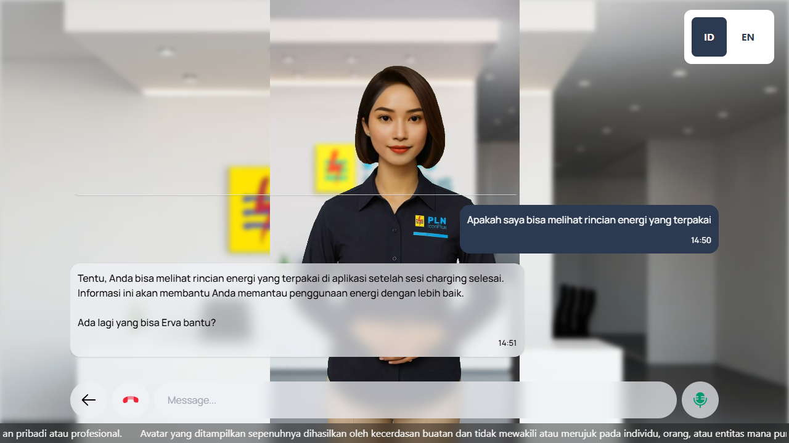 |
0.696 | FAILED | 00:00:11 |
| 92 | Apakah ada bukti pembayaran charging | Apakah ada bukti pembayaran charging | Bukti transaksi dapat dilihat pada riwayat di aplikasi PLN Mobile. | Bukti transaksi untuk charging dapat dilihat pada riwayat di aplikasi PLN Mobile. Anda bisa memeriksa detail transaksi di sana setelah sesi charging selesai.Ada lagi yang bisa Erva bantu? | Auto: ✓ Jawaban baik (similarity: 77.1%). Mencakup poin-poin utama dengan tepat. | 0.771 | PASS | 00:00:11 | |
| 93 | Apakah saya boleh menyimpan atau mengambil tangkapan layar sebagai bukti | Apakah saya boleh menyimpan atau mengambil tangkapan layar sebagai bukti | Boleh, selama digunakan untuk keperluan pribadi. | Boleh, Anda diperbolehkan menyimpan atau mengambil tangkapan layar sebagai bukti selama digunakan untuk keperluan pribadi.Ada lagi yang bisa Erva bantu? | Auto: ✓ Jawaban baik (similarity: 76.1%). Mencakup poin-poin utama dengan tepat. |
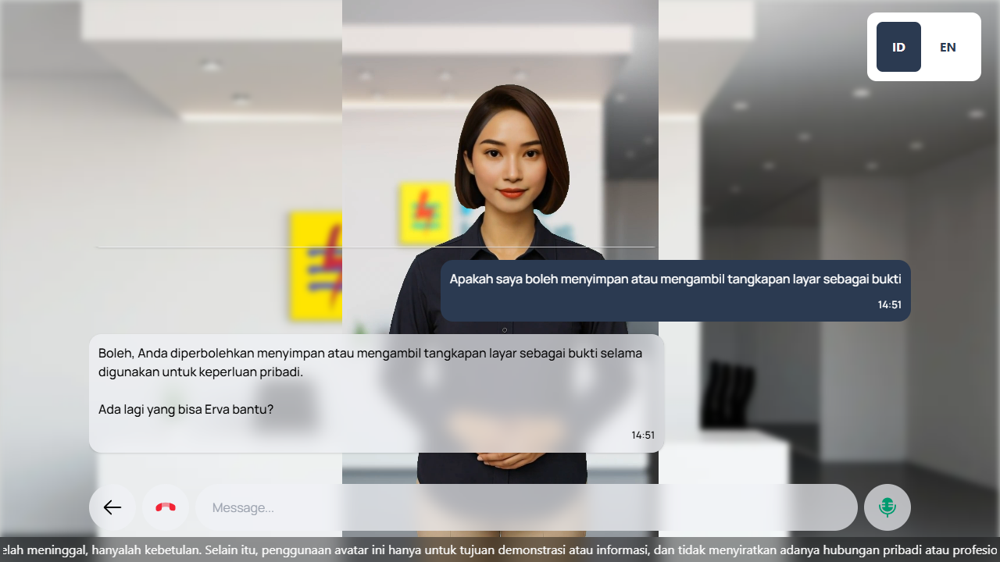 |
0.761 | PASS | 00:00:11 |
| 94 | Kenapa daya di SPKLU ini berbeda dengan SPKLU lain | Kenapa daya di SPKLU ini berbeda dengan SPKLU lain | Setiap lokasi SPKLU memiliki tipe charger dan kapasitas daya yang berbeda. | Setiap lokasi SPKLU memiliki tipe charger dan kapasitas daya yang berbeda. Hal ini menyebabkan perbedaan daya yang tersedia di setiap SPKLU.Ada lagi yang bisa Erva bantu? | Auto: ✓ Jawaban baik (similarity: 83.6%). Mencakup poin-poin utama dengan tepat. | 0.836 | PASS | 00:00:11 | |
| 95 | Apa perbedaan SPKLU di mall dan di rest area | Apa perbedaan SPKLU di mall dan di rest area | SPKLU di mall umumnya untuk pengisian lebih lama, sedangkan di rest area lebih fokus pengisian cepat. | SPKLU di mall umumnya dirancang untuk pengisian yang lebih lama, sedangkan di rest area lebih fokus pada pengisian cepat.Ada lagi yang bisa Erva bantu? | Auto: ✓ Jawaban baik (similarity: 88.9%). Mencakup poin-poin utama dengan tepat. | 0.889 | PASS | 00:00:11 | |
| 96 | Kenapa ada SPKLU yang cepat dan ada yang lambat | Kenapa ada SPKLU yang cepat dan ada yang lambat | Perbedaan kecepatan tergantung jenis charger yang dipasang di lokasi tersebut. | Perbedaan kecepatan pengisian di SPKLU tergantung pada jenis charger yang dipasang di lokasi tersebut.Ada lagi yang bisa Erva bantu? | Auto: ✓ Jawaban baik (similarity: 85.7%). Mencakup poin-poin utama dengan tepat. | 0.857 | PASS | 00:00:11 | |
| 97 | Kenapa mobil saya tidak mau jalan setelah charging selesai | Kenapa mobil saya tidak mau jalan setelah charging selesai | Kondisi ini bisa terjadi sementara karena sistem kendaraan menyesuaikan setelah charging. Ikuti petunjuk di layar mobil. | Kondisi ini bisa terjadi sementara karena sistem kendaraan menyesuaikan setelah charging. Sebaiknya, ikuti petunjuk yang muncul di layar mobil Anda untuk mengatasi masalah ini.Ada lagi yang bisa Erva bantu? | Auto: ✓ Jawaban baik (similarity: 87.3%). Mencakup poin-poin utama dengan tepat. |
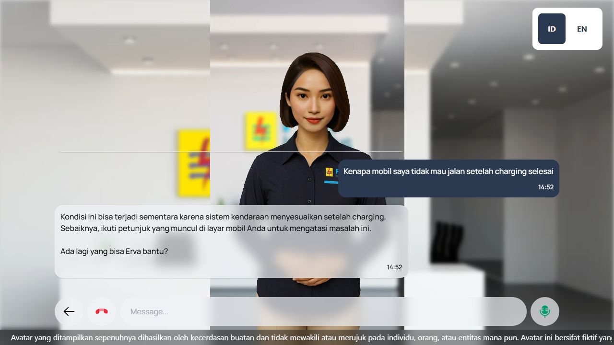 |
0.873 | PASS | 00:00:11 |
| 98 | Kenapa mobil meminta restart sistem setelah charging | Kenapa mobil meminta restart sistem setelah charging | Beberapa kendaraan meminta restart ringan untuk memastikan sistem kembali normal. | Beberapa kendaraan meminta restart ringan setelah charging untuk memastikan sistem kembali normal dan berfungsi dengan baik.Ada lagi yang bisa Erva bantu? | Auto: ✓ Jawaban baik (similarity: 83.2%). Mencakup poin-poin utama dengan tepat. | 0.832 | PASS | 00:00:11 | |
| 99 | Kenapa charger mengeluarkan bau panas | Kenapa charger mengeluarkan bau panas | Sistem pendinginan dapat menghasilkan bau ringan. Jika ragu, hentikan charging dan hubungi PLN Mobile. | Sistem pendinginan pada charger dapat menghasilkan bau ringan. Namun, jika Anda merasa ragu atau bau tersebut terasa tidak biasa, sebaiknya hentikan proses charging dan segera hubungi PLN Mobile untuk mendapatkan bantuan lebih lanjut.Ada lagi yang bisa Erva bantu? | Auto: ✓ Jawaban baik (similarity: 75.3%). Mencakup poin-poin utama dengan tepat. | 0.753 | PASS | 00:00:11 | |
| 100 | Kenapa muncul pesan yang tidak saya mengerti di charger | Kenapa muncul pesan yang tidak saya mengerti di charger | Pesan tersebut bisa berupa notifikasi sistem. Silakan cek aplikasi atau hubungi layanan PLN jika diperlukan. | Pesan tersebut bisa berupa notifikasi sistem dari charger. Untuk memahaminya lebih lanjut, Anda bisa mengecek aplikasi terkait atau menghubungi layanan PLN jika diperlukan.Ada lagi yang bisa Erva bantu? | Auto: ✓ Jawaban baik (similarity: 75.2%). Mencakup sebagian besar informasi. Akan lebih sempurna dengan silakan. | 0.752 | PASS | 00:00:11 |